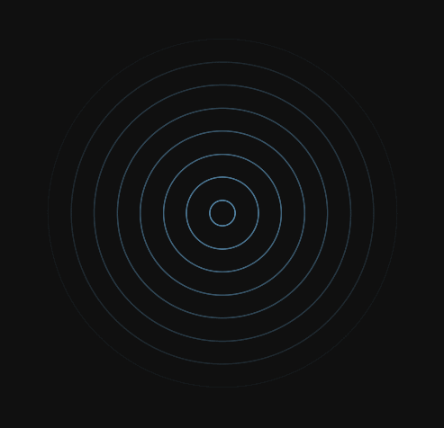
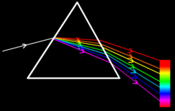
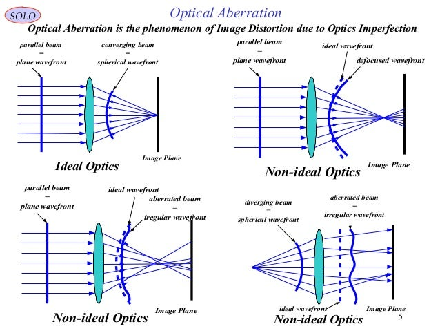
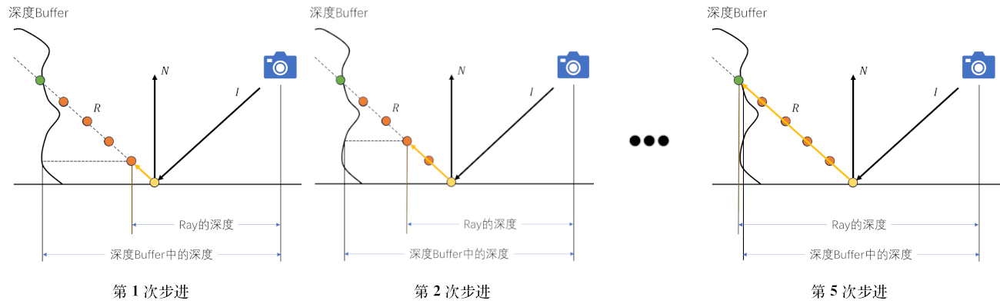
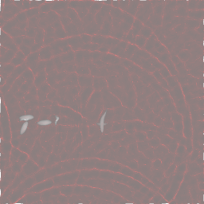
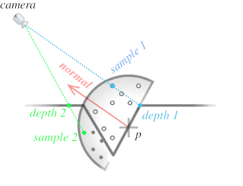
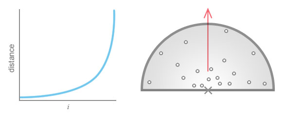

游戏 Shader 开发
Table of Contents
这篇文章主要是收集一些 3D 游戏开发常用的 Shader 技术, 以及一些风格化渲染实现.
总得来说是一篇应用类的文章, 这些应用使用了很多"基础理论", 可以从以下文章找到:
-
要求掌握线性代数, 学习对于坐标点的常用变换.
-
要求掌握线性代数, 学习
3D成像流程中需要了解的坐标系. -
了解
3D成像的总体流程以及Shader在哪些阶段中运行, 如何进行基础的Shader编程.通过
WebGL API了解贴图,FBO等概念, 以及如何在Shader中使用它们.为快速上手
Three.js提供了一些方向. -
要求掌握微积分和概率论, 学习
3D世界是如何实现光照系统.这篇文章会少量使用到贴图和
FBO这两个工具, 所以前一篇文章一定要看. -
要求掌握微积分和概率论, 学习
Shader编程中一些常用的知识点,比如如何实现随机函数, 如何检查图像边缘, 如何实现噪声等等, 另外的成像算法
RayMarching.有很多人说
ShaderToy的代码对游戏开发没有帮助, 其实是不对的, 前面这些举例在实际开发中很常见.
它们是按照知识点之间的依赖关系罗列好的, 如果是初学的话请务必按照顺序进行阅读.
本人最初学习图形学就是为了游戏的 Shader 编程, 因此本文在定位上可以说是 Shader 开发的最终章,
后续会不断记录游戏开发中的 Shader 技术.
这里选择 three.js 作为实践平台, 原因如下:
JavaScript/Typescript比起C++这样的编程语言更容易上手
- 运行环境容易搭建, 只要有个现代浏览器即可
相对于游戏引擎,
three.js的封装程度更低three.js缺少游戏引擎的一些高级特性, 要求开发者自行实现, 对于学习而言是有益的,以后切换到其它引擎上也是没问题的; 其次, 互联网上关于
three.js的资料十分充足,一定程度上可以弥补文档上的不足.
浏览器的拓展 spector.js 是一个易上手的
WebGL调试工具,很多效果的实现需要很多个阶段, 会经常遇到需要查看其中贴图的情况, 这个时候
spector.js就能帮上忙了.旧版的
Chrome是支持 RenderDoc 这样的工具调试WebGL的,后来
Chrome的更新导致了RenderDoc难以实现注入, 于是RenderDoc的开发者就放弃了WebGL的调试.
阅读时你会文章中的示例 Shader 与提供的 项目代码: shader-for-game-dev 有所区别,
这是因为 three.js 的 ShaderMaterial 的 Shader 本身就内置了一些 uniforms/attributes 变量,
所以项目代码的 Shader 并不会声明这些用到的变量; 文章的代码会按照 RawShaderMaterial 的 Shader 去写,
也就是文章中的示例 Shader 会把需要用到的内置 uniforms/attributes 变量也声明上,
保证示例的代码可以轻松的移至到其他框架上.
本文有不少内容都是参考自 3D Game Shaders For Beginners By David Lettier 的分享,
如果读者本身有一定的 C++ 基础, 可以去阅读该博客, 内容还是非常不错的.
代码命名规范
文中 shader 代码的变量命名方式 基本上 是按照 three.js 内置shader变量 进行的, 但有一些调整:
非 sampler2D 和 samplerCube 类型的 uniforms 变量的名字以 u 开头表示 uniform, 比如 uTime;
sampler2D 和 samplerCube 的 uniforms 变量的名字以 t 开头表示 texture,
比如法线贴图的名字一般是 tNormal;
varying 变量的名字以 v 开头表示 varying, 比如 vPosition;
attribute 变量的名字没有特别前缀.
渲染到贴图 (Render To Texture)
游戏开发 经常 需要把渲染结果写入到贴图上供其它 Shader 程序使用, 本质上就是 帧缓冲(Framebuffer Object / FBO) 的应用.
Three.js 的 WebGLRenderTarget 就是对帧缓冲的高级封装, 具体用法可以参考 Three.js 中使用帧缓冲.
最常见的用法是生成场景的深度贴图, 法线贴图. 这里将会介绍一些常用的贴图生成.
当然, three.js 本身就有可以生成这两种贴图的材质, 但开发者自己也需要掌握生成的方法,
有些开发需求是标准材质满足不了的, 这时候就需要自己手动实现.
另外一个原因是其中的 Shader 代码很常见, 很多地方会用到同样的代码,
为了照顾文章篇幅, 这里列出来可用于后续的"复用".
深度贴图 (Depth Texture)
根据 图形学 - OpenGL坐标变换: 透视投影 - Depth Buffer 可得知, 深度贴图的像素用于储存深度值,
而深度值是 NDC 坐标的 \(z_{ndc}\) 分量经过归一化的结果: \(depth = z_{ndc} \times 0.5 + 0.5\).
\(z_{ndc}\) 的范围是 \([-1, 1]\), \(depth\) 的范围是 \([0, 1]\).
不同项目有不同的深度值计算方式, 这只是最常见一种方式.
实现
#version 130 attribute vec3 position; uniform mat4 modelViewMatrix; uniform mat4 projectionMatrix; void main() { gl_Position = projectionMatrix * modelViewMatrix * vec4(position, 1.0); }
Fragment Shader:
#version 130 void main() { float depth = gl_FragCoord.z * 0.5 + 0.5; gl_FragColor = vec4(depth); }
把深度值归一化到 \([0, 1]\) 有利于储存, 因为默认情况下图片就是以 RGBA 储存像素,
像素的每个组件可以被解释为在 \(x \in [0, 255]\) 内的整数, 对应 Shader 里面对应 \(\frac{x}{255} \in [0, 1]\).
当然可以对贴图进行参数设置储存 \([0, 1]\) 范围外的数值, 这样就无须归一化.
在调用渲染命令进行渲染前, 需要把这两个 Shader 封装成一个材质, 把所有物体的材质都替换成该材质再进行渲染,
整个场景的渲染结果就是深度贴图, 具体操作流程可以参考示例代码里面的文件:
应用例子
这里演示在后处理中使用深度贴图,
#version 130 attribute vec3 position; attribute vec2 uv; uniform mat4 modelViewMatrix; uniform mat4 projectionMatrix; varying vec2 vUV; void main() { gl_Position = projectionMatrix * modelViewMatrix * vec4(position, 1.0); vUV = uv; }
Fragment Shader:
#version 130 varying vec2 vUV; uniform sampler2D tDepth; uniform float uCameraNear; uniform float uCameraFar; // 把非线性深度值转换成线性深度值 float getLinearDepth(sampler2D t, vec2 uv) { vec4 pixel = texture2D(t, uv); float ndcZ = 2.0 * pixel.r - 1.0; float viewZ = 2.0 * uCameraNear * uCameraFar / (ndcZ * (uCameraFar - uCameraNear) - (uCameraFar + uCameraNear)); float linearViewDepth = -viewZ; float linearDepth = (linearViewDepth - uCameraNear) / (uCameraFar - uCameraNear); return linearDepth; } void main() { float linearDepth = getLinearDepth(tDepth, vUV); gl_FragColor = vec4(vec3(linearDepth), 1.0); }
法线贴图 (Normal Texture)
这里演示在后处理中使用法线贴图,
实现
Vertex Shader:
#version 130 attribute vec3 position; attribute vec3 normal; uniform mat4 modelViewMatrix; uniform mat4 projectionMatrix; uniform mat3 normalMatrix; varying vec3 vNormal; void main() { gl_Position = projectionMatrix * modelViewMatrix * vec4(position, 1.0); vNormal = normalize(normalMatrix * normal); /* normalMatrix 是 modelMatrix 的逆矩阵, 如果 Shader 版本支持 inverse 函数, 可以像以下的方式计算出变换后的法线: uniform mat4 modelMatrix; vNormal = normalize(inverse(modelMatrix) * vec4(normal, 1.0)).xyz; */ }
Fragment Shader:
#version 130 varying vec3 vNormal; void main() { vec3 normal = vNormal * 0.5 + 0.5; gl_FragColor = vec4(normal, 1.0); }
就像深度贴图归一化深度值一样, 法线向量的每个组件的范围也是 \([-1, 1]\), 所以这里也进行了归一化.
应用例子
Fragment Shader:
#version 130 varying vec2 vUV; uniform sampler2D tNormal; void main() { gl_FragColor = vec4(texture2D(tNormal, vUV).xyz * 2.0 - 1.0, 1.0); }
具体后处理流程参考 src/RenderToTexture/postProcessing/NormalPass.ts.
想要从第三方法线贴图中读取贴图并且使用, 通常需要一个名为
TBN的矩阵,因为法线贴图中的法线向量 并非 储存在物体坐标系/世界坐标系/视点坐标系上, 而是储存在切线空间上.
根据选择的坐标系不同, 就有会无数种储存和读取向量的方法, 切线空间只是提供了一种向量的读写标准.
并且切线空间是从物体坐标系推导出来的, 所以切线空间上的向量可以像顶点那样完成从物体坐标系到世界坐标系的变换.
重新计算法线向量
在 Vertex Shader 里面对顶点 \(V_0\) 进行位移变换只影响视觉, 并非真的修改几何数据, 因此不会对法线向量 \(N\) 产生影响,
这导致了变换后的顶点坐标与法线向量 \(N\) 对应不上的问题. 在 图形学 - OpenGL坐标系变换: 法线贴图 可以了解到,
从法线贴图中读取法线需要一个 TBN 矩阵对所读取的法线进行变换, 得到一个世界坐标系的法线向量, 这才是通常使用的法线向量.
平时用的 \(N\) 就是在构建 TBN 矩阵时就顺便计算出来的, \(N\) 是在物体坐标系上, 所以以参考 TBN 的构建来重新构建法线向量.
但 TBN 矩阵的基向量都是 CPU 根据几何数据计算出来的, 而 shader 中只能获取一个顶点坐标, 这并不满足 TBN 构建的条件.
在 图形学 - OpenGL坐标系变换: 平面方程 可以学习到, 一个法线向量就能构建一个平面方程,
一个向量有无数个正交向量, 这些正交向量全都处于一个平面上, 该向量代表该平面本身, 这个向量就是俗称的法线向量.
根据这个事实, 取 \(N \cdot T = 0\) 的其中一个解作为正切向量, 再让 \(B = T \times N\) 作为副切向量.
\(T\) 和 \(B\) 是位移变换前平面上的向量, 可以通过它们找出当前顶点 \(V_0\) 的相邻顶点 \(\begin{cases} V_T = V_0 + T \\ V_B = V_0 + B \end{cases}\),
\(N\) 所代表的平面是一个无限大的平面, 包含了几何体实际的表面, 因此 \(V_T\) 和 \(V_B\) 并不一定存在,
但即便这两个顶点不实际存在, 也可以用在后续的计算并得出正确结果.
分别计算出 \(V_0\), \(V_T\) 和 \(V_B\) 经过位移变换 \(f\) 后的坐标: \(f(V_0)\), \(f(V_T)\) 和 \(f(V_B)\),
即便只是在视觉上改变了几何体的结构, 仍然可以认为:
对几何体的顶点 \((x, y, z)\) 进行 \(f\) 变换得到 \((u, v, w)\) 从而构建出新几何体.
因此, \(f\) 定义应为一个把坐标映射到新坐标的连续多元向量函数:
\(f(x, y, z) = (u(x, y, z), v(x, y, z), w(x, y, z))\), 其中 \(u, v, w\) 均为多元连续标量值函数.
重新构建新的切向量 \(T_{f}\) 和副切向量 \(B_{f}\) 确认新的平面, 最后计算出法线向量 \(N_{f}\): \(\begin{cases} T_{f} = \frac{f(V_T) - f(V_0)}{|f(V_T) - f(V_0)|} \\ B_{f} = \frac{f(V_B) - f(V_0)}{|f(V_B) - f(V_0)|} \\ N_{f} = T_{f} \times B_{f} \end{cases}\).
以下是 Vertex Shader 的伪代码:
vec3 orthgonal(vec3 v) { /* 一个向量有无数个正交向量 n, 只要满足 dot(n, v) = 0 即可, 选取正交向量时应该尽量避免那些接近零向量的正交向量, 任何非零向量与零向量进行点积/叉积/标量乘法运算的结果都是零向量. 这个正交算法是比较 v 的 x 和 z 分量的绝对值大小, 让较大的分量与 y 分量构成正交向量, 这样可以避免选取的正交向量接近零向量. */ if (abs(v.x) > abs(v.z)) { // 法线偏向 x 轴 return normalize(vec3(-v.y, v.x, .0)); } else { // 法线偏向 y 轴 return normalize(vec3(.0, -v.z, v.y)); } } vec3 calcDispNormal(vec3 oldNormal) { // oldNormal 在物体坐标系上 float pxOffset = 1.0 / resolution; // 或者一个很小的值即可 vec3 N = normalize(oldNormal); vec3 T = orthgonal(N); vec3 B = cross(T, N); vec3 positionT = position + pxOffset * T; vec3 positionB = position + pxOffset * B; vec3 dispPos = f(position); vec3 dispPosT = f(positionT); vec3 dispPosB = f(positionB); vec3 dispT = normalize(dispPosT - dispPos); vec3 dispB = normalize(dispPosB - dispPos); vec3 dispN = cross(dispT, dispB); return dispN; }
上面的内容是对以下链接的总结:
Calculating vertex normals after displacement in the vertex shader
高度场水面模拟 (Heightfield Water Simulation)
有很多种方法可实现水面模拟, 其中最简单的莫过于使用高度场(heightfields)进行模拟,
每平面坐标都会有一个值来反应它的高度, 这些值的集合就是一个高度场.
最常见的高度场应用例子就是使用柏林噪声生产地形, 本质上就是使用噪声算法生成高度场, 使得平面的不同位置上高度不一致.
然而与地形不同, 水面是可以交互的, 比如对水面使力产生波纹, 还有光线照射到水面,
所产生的折射(refraction)/反射(reflection)/焦散(caustic)的物理现象.
鉴于高度场的特性, 这种方法并不能模拟所有水面, 比如巨浪, 因为巨浪不符合高度场的特性.

Figure 1: 高度场

Figure 2: 翻卷巨浪
这将会是一场漫长而艰难的冒险, 完成之后会学到很多知识, 这些知识是后续学习的尝鲜.
我会尽己所能把难啃的部分讲清楚, 带你一步一步地完成冒险.
最早是被 WebGL Water by Evan Wallace 这个例子惊艳到了, 所以才对水面模拟产生了兴趣,
在阅读了它的代码后发现了一些缺陷: 与水互动的物体只有一个规则的球体, 不规则的物体没法与该例子的水面进行合理的互动.
后来找到 Real-time rendering of water caustics by Martin Renou 这篇文章, 发现这缺陷早已被提出并且找到解决方法了,
但在阅读了新的代码后发现新代码并不通用也有一些问题: 模拟的水面并不通用.
为此, 我开始着手解决不通用的问题, 并记录下每一步的思路.
这个章节将会不可避免的涉及一些 JavaScript 代码, 由于想尽量减少实现方案与具体语言/框架之间的关联性,
个人是不太情愿混入 GLSL 以外的代码, 但毕竟是无法避免的, 所以我的想法是不使用 JavaScript 的专有特性,
只使用变量, 条件判断, 循环语句, 函数, 类这些大部分语言都有的通用特性.
如果读者不熟悉
JavaScript的面向对象编程, 可以阅读MDN教程快速熟悉一下: JavaScript 中的类,基本上和其它语言的面向对象编程没太大区别. 也曾试不使用类这一特性, 但实现之后发现代码逻辑很"松散",
对阅读不友好, 所以放弃了这一做法.
整体实现思路
即便使用高度场实现水面也不是一件简单的事情, 我们要把整个实现划分为几步:
计算水面的高度场
水面平静时, 水面的高度为零. 对水面拍打时会形成在拍打位置(受力点)为圆心形成一股能量,
把圆心周围的水面推高, 从而形成波纹; 随着时间推移, 越早形成波纹的水面位置, 越是快恢复平静;
在停止受力后, 那股不断往外扩散的能量终究消失到其它地方, 水面最终回归平静.
该规律正好符合一些平时见到的扩散环动画. 这估计就是人喜欢用扩散环来表示水面波纹的原因了.

Figure 3: 亮度表示水面高度, 越亮表示更高, 越暗表示更低 (图片来源于: threejs-shader-平面扩散波-demo)
水面高度也是对能量大小的反映, 因此可以视为能量从高能量位置从低能量位置的方向进行转移,
由于能量转移, 每推动一次波纹后能量就会减少, 可以看成把能量的转移分摊到扩散范围内的每个位置上.
图像处理中 拉普拉斯核 能用来模拟扩散现象, 正好高度场是一张图片, 所以扩散的模拟成了图像处理问题.
对高度场进行一次处理就相当于扩散一次, 对上一次扩散结果再进行一次处理就相当于又扩散一次, 如此类推, 直到扩散完毕.
制作水面
这一步需要使用前面计算得到的高度场实现水面波纹, 还需要一些其它贴图来实现水面反射和折射的效果.
只要接触到透明物体, 那么反射和折射效果的实现是必须要学的.
计算焦散
所谓焦散是指光线经过折射发生聚散, 使得部分光线在击中场景时发生相交, 使得场景部分位置具备更高亮度.

Figure 4: 现实中的焦散
如同计算水面的高度场一样, 焦散的运算结果也是储存在贴图上, 再提供给水底物体的
shader使用.为水底的场景编写
shader这里的水底物体只要一个要求: 只要求能正确渲染焦散效果和阴影.
使用 GPU 进行计算
在实现中我们需要借助 GPU 来完成水面高度场的运算, 计算结果被储存在贴图中提供给其它程序使用.
与 CPU 不同, GPU 适用于并行计算, 我们的例子就是这种情况.
那么应该如何使用 GPU 进行运算呢? Three.js 用于后处理的 Pass 类就是一个使用 GPU 运算的例子:
创建一个不会被添加到场景中的平面和一个视锥体大小能正好覆盖完平面的正交相机, 为作为计算上下文的平面编写 Shader 程序,
渲染时把计算结果通过 帧缓冲(Framebuffer Object / FBO) 写入到贴图中供下一次渲染使用.
这其中使用了 Ping-Pong 渲染技巧: 使用两张贴图(或者 FBO)分别用于读和写, 并且每渲染一次就交换两者的读写职能.

Figure 5: Ping-Pong 渲染技巧
Ping-Pong 渲染技巧可以避免同一个资源的读写竞争, 而且每次渲染都能读取到上一次渲染的结果.
以下是常用的 GPU 计算模板:
class GPUComputeExample { constructor() { this._camera = new THREE.OrthographicsCamera(-1, 1, 1, -1, 0, 1) this._quad = new THREE.Mesh( new THREE.PlaneGeometry(2, 2), // 尺寸是 2x2, 与相机视锥体的远裁剪平面尺寸匹配 new THREE.ShaderMaterial({ uniforms: { tLastFrame: { value: null }, /* your-uniforms */ }, vertexShader: `your-vertex-shader`, fragmentShader: `your-fragment-shader` })) // 默认设置下, 相机的位置和方向是对齐 this._quad 的 // 储存渲染结果的贴图尺寸 const textureSizeX = 512 const textureSizeY = 512 // 贴图类型需要 THREE.FloatType, 计算结果通常是超过默认值 255 this._targetA = new THREE.WebGLRenderTarget( textureSizeX, textureSizeY, { type: THREE.FloatType }) this._targetB = new THREE.WebGLRenderTarget( textureSizeX, textureSizeY, { type: THREE.FloatType }) this.target = this._targetA } // 执行渲染命令, 使用 Ping-Pong 渲染技巧 render(renderer) { // 交换两个 FBO 的读写职能 // this.target 为上一次渲染所使用的 FBO const _newTarget = this.target === this._targetA ? this._targetB: this._targetA // 绑定新 FBO 用于渲染 renderer.setRenderTarget(_newTarget) // 把上一次的渲染结果给到新 FBO this._quad.uniforms['tLastFrame'].value = this.target.texture // 渲染 renderer.render(this._quad, this._camera) // 把新 FBO 标记为上一次使用的 FBO this.target = _newTarget } } // 使用例子 const example = new GPUComputeExample() // 调用渲染命令, renderer 项目中的渲染器对象 example.render(renderer) // 读取渲染结果 example.target.texture
有一点还需要注意, 平面的尺寸不影响计算量, 这是受贴图尺寸影响的;
也不影响贴图能否覆盖其它物体的表面, 这是受贴图映射 UV 的使用方式影响;
因此, 平面尺寸是不值得关心的东西, 但是需要满足: 平面尺寸能正好能被相机视锥体的远裁剪平面覆盖,
否则生成的贴图会有空白边.
计算水面的高度场
水面高度场的计算调度比上面的模板复杂一点, 需要分成两个部分:
- 给水面添加作用力
- 波纹扩散计算
这两个部分是不分先后顺序的, 换而言之它们是独立的, 为此需要两个平面作为计算上下文,
但这两个部分的计算结果是共享的, 比方说, 扩散计算可以读取到给水面添加作用力后的渲染结果,
反过来, 给水面添加作用力时也能读取到扩散计算的结果, 高度场的计算调度如下:
import * as THREE from 'three' import vertexShader from './shader/vertex.glsl?raw' import dropFragShader from './shader/drop_frag.glsl?raw' import updateFragShader from './shader/update_frag.glsl?raw' export default class { constructor(textureSizeX, textureSizeY) { const _textureSizeX = 512 const _textureSizeY = 512 if (!textureSizeX) textureSizeX = _textureSizeX if (!textureSizeY) textureSizeY = _textureSizeY this._camera = new THREE.OrthographicCamera(-1, 1, 1, -1, 0, 1) const quadGeo = new THREE.PlaneGeometry(2, 2) // 计算作用力的上下文 this._quadDrop = new THREE.Mesh( quadGeo, new THREE.RawShaderMaterial({ uniforms: { uDropUV: { value: [0, 0] }, uDropRadius: { value: 1 }, uDropStrength: { value: 0 }, tLastFrame: { value: null } // 传递上一帧的计算结果 }, vertexShader: vertexShader, fragmentShader: dropFragShader }) ) // 计算波纹扩散的上下文 this._quadUpdate = new THREE.Mesh( quadGeo, new THREE.RawShaderMaterial({ uniforms: { uDelta: { value: [ 1 / textureSizeX, 1 / textureSizeY ] }, tLastFrame: { value: null } // 传递上一帧的计算结果 }, vertexShader: vertexShader, fragmentShader: updateFragShader }) ) this._targetA = new THREE.WebGLRenderTarget( textureSizeX, textureSizeY, { type: THREE.FloatType }) this._targetB = new THREE.WebGLRenderTarget( textureSizeX, textureSizeY, { type: THREE.FloatType }) this.target = this._targetA } _render(renderer, mesh) { const _newTarget = this.target === this._targetA ? this._targetB: this._targetA renderer.setRenderTarget(_newTarget) const material = mesh.material material.uniforms['tLastFrame'].value = this.target.texture renderer.render(mesh, this._camera) this.target = _newTarget } // 给水面添加作用力, 用水滴击中水面例子 /* u, v: 水滴击中水面的位置, 要求是 [0, 1] 范围的 uv 坐标 dropRadius: 水滴击中水面时所影响的范围 dropStrength: 水滴击中水面时最大的溅起高度 */ addDrop(renderer, u, v, dropRadius, dropStrength) { const material = this._quadDrop.material material.uniforms['uDropUV'].value = [u, v] material.uniforms['uDropRadius'].value = dropRadius material.uniforms['uDropStrength'].value = dropStrength this._render(renderer, this._quadDrop) } // 计算波纹扩散 stepSimulation(renderer) { this._render(renderer, this._quadUpdate) } }
接下来是 Shader 部分了, 它们是计算的重点, 我会在代码里面用注释进行解释.
./shader/vertex.glsl:
attribute vec3 position; attribute vec2 uv; varying vec2 vUV; void main() { /* 参考例子是使用 position.xy * 0.5 + 0.5 充当 UV 坐标, 这么做是有前提的: 平面的尺寸必须为 2x2, 它四个顶点的坐标如下: v1 1 v2 | -1 --- 0 --- 1 | v3 -1 v4 因此 position.xy * 0.5 + 0.5 得到的是 [0, 1] 范围的 UV. 我们这里直接使用 uv. */ vUV = uv; // 高度场的所有计算都是基于 UV 进行, 这一点非常重要 gl_Position = vec4(position.xyz, 1.0); }
计算水面受力的 ./shader/drop_frag.glsl:
precision highp float; precision highp int; #define PI 3.141592653589793 uniform sampler2D tLastFrame; uniform vec2 uDropUV; // 水滴的中心, 要求是 [0, 1] 范围的 uv 坐标 uniform float uDropRadius; // 水滴击中水面时影响的范围半径 uniform float uDropStrength; // 水滴击中水面时最大的溅射高度 varying vec2 vUV; void main() { /* info: 高度场信息 <r, g, b, a> => <水面高度, 高度变化速度, 法线的 x 分量, 法线的 y 分量> */ vec4 info = texture2D(tLastFrame, vUV); // 水滴位置与当前片元的距离 float dist = length(uDropUV - vUV); /* 水滴击中水面时对当前片元造成的影响程度 f(d, r) := 1.0 - d / r, 当 d = r 时, f = 0; 当 d = 0 时, f = 1, 所以 f 定义域的值域范围是: [0, r] => [0, 1] */ float drop = max(0.0, 1.0 - dist / uDropRadius); /* 由于上一步的 drop 范围是 [0, 1], 所以 cos(drop * PI) 的范围是 [-1, 1], 因此 0.5 - cos(drop * PI) * 0.5 的范围是 [0, 1] */ drop = 0.5 - cos(drop * PI) * 0.5; // 根据影响程度和最大溅射高度计算当前片元的水面高度 info.r += drop * uDropStrength; // 把计算结果输出到贴图 gl_FragColor = info; }
计算波纹扩散的 ./shader/update_frag.glsl:
precision highp float; precision highp int; uniform sampler2D tLastFrame; uniform vec2 uDelta; varying vec2 vUV; void main() { vec4 info = texture2D(tLastFrame, vUV); // 计算相邻纹理的平均高度 vec2 dx = vec2(uDelta.x, 0.0); vec2 dy = vec2(0.0, uDelta.y); float g = ( texture2D(tLastFrame, vUV - dx).r + texture2D(tLastFrame, vUV - dy).r + texture2D(tLastFrame, vUV + dx).r + texture2D(tLastFrame, vUV + dy).r - 4.0 * texture2D(tLastFrame, vUV).r ) * 0.25; /* 使用拉普拉斯核模拟扩散 1 / 4 * [0 1 0 1 -4 1 0 1 0] */ // 计算水面高度到平均值的速度 info.g += g; // 模拟能量转移, 因此速度被衰减 info.g *= 0.98; // 沿着速度方向更新水面高度 info.r += info.g; // 计算法线 float ht = texture2D(tLastFrame, vUV + dx).r; vec3 tangent = vec3(uDelta.x, 0.0, ht - info.r); float hbt = texture2D(tLastFrame, vUV + dy).r; vec3 bitangent = vec3(0.0, uDelta.y, hbt - info.r); info.ba = normalize(cross(tangent, bitangent)).xy; /* 水面的波纹顶点: (vUV.x, vUV.y, h), 以 UV 坐标平面作为 XY 平面, 这是因为 threejs 的 PlaneGeometry 是从 XY 平面构建的. 水平方向相邻纹理的高度: hx = texture2D(tLastFrame, vec2(vUV.x + uDelta.x, vUV.y)).r 水平方向相邻纹理对应的水面顶点: (vUV.x + uDelta.x, UV.y, hx) tagent = (vUV.x + uDelta.x, vUV.y, hx) - (vUV.x, vUV.y, h) = (uDelta.x, 0, hx - h) 垂直方向相邻纹理的高度: hy = texture2D(tLastFrame, vec2(vUV.x, vUV.y + uDelta.y)).r 垂直方向相邻纹理对应的水面顶点: (vUV.x, vUV.y + uDelta.y, hy) bitangent = (vUV.x, vUV.y + uDelta.y, hy) - (vUV.x, vUV.y, h) = (0, uDelta.y, hy - h) normal = normalize(cross(bitangent, tangent)) [i, j, k a, 0, b 0, c, d] normal = [-bc, -ad, ac]: [ -(hx - h) * uDelta.y, uDelta.x * (hy - h), uDelta.x * Delta.y ] 储存时只需要储存 nomral.xy 即可, 因为 (normal.x)^2 + (normal.y)^2 + (normal.z)^2 = 1, 可以根据 sqrt(1 - (normal.x)^2 - (normal.y)^2) = ±normal.z 还原出 normal, 需要注意正负号, 所以: (info.b, info.a, sqrt(1. - dot(info.ba, info.ba))) */ gl_FragColor = info; }
该计算模块位于:
src/HeightfieldWaterSimulation/GPUComputation/WaterHeightfield/index.ts
制作水面
水面的反射(reflection)和折射(refraction)现象都非常明显, 这使得水成为同类物质的代表.
这两个现象不可避免得与环境发生交互, 比如反射的是水面上的环境, 折射的是水面下的场景,
既然同时具备两种现象, 那么什么情况下显示反射的内容, 什么情况下显示折射的内容.
这要分成两个部分进行讨论, 首先是采样的场景, 需要对环境进行采样分别获取反射和折射的内容,
这项技术叫做环境映射(environment mapping). 通常 需要天空盒(skybox)这种立方体贴图来作为环境,
也有的实时渲染生成环境贴图并从中进行采样, 这里我们同时使用两种方法.
其次, 是反射和折射的选择, 两者可以共存, 一个被观察点的颜色, 有一部分源于反射射线击中的物体,
一部分源于折射射线击中的物体, 在折射的部分大于反射时, 观察者可以看到水底下的场景;
在反射的部分大于折射时, 观察者可以看到水面反射的景像.
在 图形学 - 光和材质: 菲涅耳效应 有讨论菲涅耳反射系数的计算, 该系数就是被观察点颜色反射部分的比例.
反射 (Reflection)
先来实现反射效果, 首先需要一个立方体贴图(cubemap)作为采样场景,
在计算出反射射线 \(\overline{R}\) 后根据 \(\overline{R}\) 从立方体贴图中采样,
GLSL 中提供 \(reflect\) 函数来计算反射方向 \(\overline{R}\), 具体思路如下:

attribute vec3 position; attribute vec3 normal; uniform mat4 modelMatrix; // 场景贴图(立方体贴图) uniform samplerCube tSkyBox; // 是从相机出发到被观察点 vec3 posWorld = (modelMatrix * vec4(position, 1.0)).xyz; /* 这里假设 modelMatrix = translateMatrix * rotationMatrix * scaleMatrix 的缩放变换 scaleMatrix 是等比缩放, 这样在不考虑平移变换的情况下 M = translateMatrix * rotationMatrix 的逆矩阵就是它自身的转置矩阵 transpose(M) */ vec3 normalWorld = (modelMatrix * vec4(normal, 0.0)).xyz; vec3 I = normalize(posWorld - cameraPosition); vec3 N = normalize(normalWorld); vec3 R = normalize(reflect(I, N)); vec4 reflectedColor = textureCube(tSkyBox, R);
采样的场景可以是静态, 也可以是动态的, 不管是哪一种, 最后在
shader中的读取都是一样的,关键在于动态的场景需要事实计算立方体贴图,
three.js的 CubeCamera 就是用于把场景写入到立体贴图中.如果所使用的图形库没有同类接口, 可以参考 图形学 - 光和材质: 位置光源的阴影 的阴影生成立方体贴图的思路.
和使用 GPU 计算的 shader 不同, 作为场景物体材质所使用的 shader 需要注意坐标系的变换,
比如这里计算如何光线 \(\overline{I}\) 是需要把顶点坐标 \(position\) 变换到世界坐标系上,
因为相机位置 \(cameraPosition\) 就是世界坐标系的坐标.
折射 (Refraction)
大部分教程都会使用立方体贴图用于折射的采样, 但该例子的水底的样子并非由立方体贴图提供的,

这么做是因为水底场景并非固定的, 可以按照自己的意愿添加物体, 所以这里只能实时生成环境贴图, 再从中取样.
但这里并不需要实时计算立方体贴图, 因为相比反射的大幅度地让出射射线偏离入射射线, 折射只会造成轻微的偏离,
换而言之, 透过水面观察到的景象与无视水面直接观察到的景象, 两者只是发生了轻微偏移,
这意味着折射射线可以通过直接观察的景象中进行采样. 因此, 场景贴图的生成思路大概如下:
// 专门使用一个 FBO 用于渲染水面以外的场景 const underWaterEnvMapTarget = new THREE.WebGLRenderTarget( heightfieldSizeX, heightfieldSizeY) const oldRenderTarget = renderer.getRenderTarget() // 设置 FBO 用于接收渲染结果用作场景贴图 renderer.setRenderTarget(underWaterEnvMapTarget) // 隐藏水面 water.visible = false // 渲染 renderer.render(scene, camera) // 恢复水面的显示 water.visible = true // 恢复原本的 FBO renderer.setRenderTarget(oldRenderTarget) // 把场景贴图提供给到水面的材质使用 water.material.uniforms['tEnvMap'].value = underWaterEnvMapTarget.target
在得到环境贴图后, 可以先计算出折射方向 \(\overline{R}\) 再根据它从环境贴图中采样,
GLSL 也提供了 \(refract\) 函数用于计算折射方向 \(\overline{R}\), 具体思路如下:
attribute vec3 position; attribute vec3 normal; uniform sampler2D tEnvMap; uniform mat4 modelMatrix; uniform mat4 viewMatrix; uniform mat4 projectionMatrix; #define AIR_IOR 1.0 #define WATER_IOR 1.325 // 是从相机出发到被观察点 vec3 posWorld = (modelMatrix * vec4(position, 1.)).xyz; vec3 normalWorld = (modelMatrix * vec4(normal, 0.0)).xyz; vec3 I = normalize(posWorld - cameraPosition); /* 这里假设 modelMatrix = translateMatrix * rotationMatrix * scaleMatrix 的缩放变换 scaleMatrix 是等比缩放, 这样在不考虑平移变换的情况下 M = translateMatrix * rotationMatrix 的逆矩阵就是它自身的转置矩阵 transpose(M) */ vec3 N = normalize(normalWorld); float eta = AIR_IOR / WATER_IOR; vec3 R = normalize(refract(I, N, eta)); mat4 VP = projectionMatrix * viewMatrix; vec4 refractedPosNDC = MVP * normalize(vec4(posWorld + R, 1.0)); // 计算 UV 坐标, 用于从环境贴图中采样 vec2 refractedUV = refractedPosNDC.xy / refractedPosNDC.w; vec4 refractedColor = texture2D(tEnvMap, refractedUV);
现实中的折射其实会形成色散(dispersion)现象:
同一种光学材质对不同颜色的折射率(refractive index)有所差别, 波长越短的光, 折射率越大; 波长越长的光, 折射率越小.
造成同一束光被分解成不同颜色的光显示在不同位置上. 色散有时候也被叫做色差(chromatic aberration). 彩虹就是色散形成的.

Figure 6: 色散 (图片来源于: http://www.myliushu.com/3020.html)
因此, 可以这样模拟色散效果,
float etaGrad = 0.04; vec3 refractedColor = vec3(1.); // 色散过后的颜色 // 红色出射折射率最小 vec4 refractedPosNDC = MVP * normalize(vec4(position + R, 1.0)); vec2 refractedUV = refractedPosNDC.xy / refractedPosNDC.w; color = texture2D(tEnvMap, refractedUV); refractedColor.r = refractedColor.r; R = normalize(refract(I, N, eta * (1.0 - etaGrad))); refractedPosNDC = MVP * normalize(vec4(position + R, 1.0)); refractedUV = refractedPosNDC.xy / refractedPosNDC.w; refractedColor = texture2D(tEnvMap, refractedUV); refractedColor.g = refractedColor.g; // 蓝色的出射折射率最大 R = normalize(refract(I, N, eta * (1.0 - etaGrad * 2.0))); refractedPosNDC = VP * normalize(vec4(position + R, 1.0)); refractedUV = refractedPosNDC.xy / refractedPosNDC.w; refractedColor = texture2D(tEnvMap, refractedUV); refractedColor.b = refractedColor.b;
综合反射与折射
计算出菲涅耳系数作为折射部分和反射部分之间的渐变系数, 最终渐变结果作为片元颜色. 具体实现如下:
const float f0 = pow(AIR_IOR - WATER_IOR / AIR_IOR + WATER_IOR, 2.0); float fresnelFactor = f0 + (1.0 - f0) * pow(1.0 - dot(-eye, norm), 5.0); float fresnelScale = 0.8; vec3 finalColor = mix(refractedColor, reflectedColor, fresnelScale * clamp(fresnelFactor, 0., 1.));
使用高度场制造波纹
我们会使用一个 3D 平面, 配合高度场修改平面顶点的 \(z\) 分量来实现水面.
就像使用柏林噪声生成地形一样, 3D 平面需要有较相当数量的顶点才能让平面实现"弯曲":
const width = height = 2 // 要设置多一点的分段数量 const segmentWidth = segmentHeight = 100 const water = new THREE.Mesh( new THREE.PlaneGeometry(width, height, segmentWidth, segmentHeight), // ... your material )
以下该水面模型所使用的 shader,
Vertex Shader:
attribute vec3 cameraPosition; attribute vec3 position; attribute vec2 uv; uniform mat4 modelViewMatrix; uniform mat4 projectionMatrix; uniform sampler2D tHeightfield; varying float vFresnelFactor; varying vec3 vReflectedDir; varying vec2 vChromaticAberrationUV[3]; #define AIR_IOR 1.0 #define WATER_IOR 1.333 // IOR 可以从这里查找 https://pixelandpoly.com/ior.html void main () { vec4 info = texture2D(tHeightfield, uv); // 根据高度场计算出当前顶点的坐标 vec3 pos = vec3(position.xy, position.z + info.r); vec3 posWorld = (modelMatrix * vec4(pos, 1.)).xyz; // 计算出当前顶点的法线向量: 这种方法只限于水面的模型的缩放为等比缩放 vec3 normWorld = (modelMatrix * vec4(info.ba, sqrt(1. - dot(info.ba, info.ba)), 0.)).xyz; const float eta = AIR_IOR / WATER_IOR; vec3 eye = normalize(posWorld.xyz - cameraPosition); // 计算折射向量 vec3 refractedDir = normalize(refract(eye, normWorld, eta)); // 计算反射向量 vReflectedDir = normalize(reflect(eye, normWorld)); // 计算菲涅耳系数 const float f0 = pow((AIR_IOR - WATER_IOR) / (AIR_IOR + WATER_IOR), 2.0); vFresnelFactor = f0 + (1.0 - f0) * pow(1.0 - dot(-eye, normWorld), 5.0); mat4 VP = projectionMatrix * viewMatrix; // 计算色差 (chromatic aberration), 模拟不同波长的光对折射率的影响 float etaGrad = 0.04; // Chromatic Aberration Factor vec4 refractedPos = VP * normalize(vec4(posWorld + refractedDir, 1.0)); vChromaticAberrationUV[0] = refractedPos.xy / refractedPos.w * 0.5 + 0.5; refractedPos = VP * normalize(vec4(posWorld + normalize(refract(eye, normWorld, eta * (1.0 - etaGrad))), 1.0)); vChromaticAberrationUV[1] = refractedPos.xy / refractedPos.w * 0.5 + 0.5; refractedPos = VP * normalize(vec4(posWorld + normalize(refract(eye, normWorld, eta * (1.0 - etaGrad * 2.0))), 1.0)); vChromaticAberrationUV[2] = refractedPos.xy / refractedPos.w * 0.5 + 0.5; gl_Position = VP * vec4(posWorld, 1.); }
Fragment Shader:
uniform samplerCube tSkyBox; uniform sampler2D tEnvMap; varying float vFresnelFactor; varying vec3 vReflectedDir; varying vec2 vChromaticAberrationUV[3]; void main() { vec3 reflectedColor = textureCube(tSkyBox, vReflectedDir).xyz; vec3 refractedColor = vec3(1.); refractedColor.r = texture2D(tEnvMap, vChromaticAberrationUV[0]).r; refractedColor.g = texture2D(tEnvMap, vChromaticAberrationUV[1]).g; refractedColor.b = texture2D(tEnvMap, vChromaticAberrationUV[2]).b; vec3 color = mix(refractedColor, reflectedColor, clamp(vFresnelFactor, 0., 1.)); gl_FragColor = vec4(color, 1.); }
该材质位于:
src/HeightfieldWaterSimulation/materials/WaterMaterial/index.ts
计算焦散 (Caustic)
焦散的形成原因很简单, 光线在经过折射后分散在不同位置上,
部分光线聚焦(converging)在相同位置上, 部分光线则是被散射(diverging)在不同位置上,
光线聚焦在一起的位置的亮度更高, 相比之下, 没有光聚焦的位置的亮度相对低一些.

Figure 7: 图片来自于 Real-time rendering of water caustics by Martin Renou
如何在程序中量化聚散程度
Evan Wallace 的 Rendering Realtime Caustics in WebGL 介绍了光线在不同时刻上的投影面积比来量化聚散程度,
其中使用到了波前(wavefront)的概念.

所谓波前是指从波源(source)出发, 由波传播了相同时间的点所构成的面, 通俗点就是波在传播过程中某一刻的位置集合.
波的传播方向与波前的局部垂直, 因此, 波前的形状可以反映出波的传播方向,

Figure 8: 光学像差和波前 (图片来源于 Slideshare)
光学像差(optical aberration)是指由于光学系统不完美(optics imperfection)所导致的图像扭曲(image distorition).
在理想的光学系统(ideal optics)中, 波前的形状很好的反映了透镜的厚度变化, 由于光在透镜要比在空气中的传播速度要慢,
因此在相同时间内, 光在透镜较厚的部位要比较薄的部位的传播距离更小,
在非理想情况下, 由于工艺不完善的导致透镜的密度不均匀, 使得非理想情况下与理想情况下的波前存在误差.
量化聚散程度的方法很简单, 把水体看作是一个巨大的透镜, 把水面形状看作是折射发生时的波前形状,
比较光在折射前的投影面积 \(A_1\) 和折射后的投影面积 \(A_2\) 之间的大小, 因折射的不同导致两者大小不一致:
\(\frac{A(t_1)}{A(t_2)} \gt 1\) 说明发生了聚焦, \(\frac{A(t_1)}{A(t_2)} \lt 1\) 说明发生了散射.
Evan Wallace的做法稍微有些不同:分别计算水面平静时和不平静时光线在水底的投影面积 \(A_1\) 和 \(A_2\), 最后进行比较 \(\frac{A_1}{A_2}\).
问题是如何计算投影面积呢? 想要在 shader 中根据顶点信息计算面积的前提是: 可以获得顶点所处面(三角形)的所有顶点信息.
有三种方法可以做得到:
一是通过 调整 VAO 和 VBO 来一次性把面的所有顶点传入到 shader 中再计算面积;
二是在 fragment shader 中使用 求导函数 \(dFdx\) 和 \(dFdy\) 分别获取当前片元在 \(x\) 和 \(y\) 方向上的属性差,
如果是计算片元的顶点坐标差 \(\vec{v_x}\) 和 \(\vec{v_y}\), 那么就可以计算出三角面的面积: \(\frac{1}{2} |\vec{v_x}| |\vec{v_y}|\);
三是分别把光与水面的交点写入贴图 \(A\) 和把折射光与水底交点写入贴图 \(B\), 再用在专门的 shader 中计算焦散,
这种方法其实是第二种方法的变体, 区别在于不使用 \(dFdx\) 和 \(dFdy\) 两个函数,
但显存和内存的占用会更高和渲染效率会更低, 开发也更为麻烦, 除非需要复用到这两张贴图, 否则不建议使用第三种方法.
因此, 第二种方法会好一点. 正如第三种方法所言, 在计算面积比前要找出光线与水面的交点, 以及折射光线与水底的交点.
在光栅化渲染中使用 Ray Marching 找出射线与场景的交点
找出光线与水面的交点非常简单, 当找出光线与水底的交点就不是一件容易的事情.
我们的情况和 Evan Wallace 的例子不同, Evan Wallace 的水底环境是由规则几何体构成的,
这意味着很容易通过数学方法找出光线与水池的交点, 然后计算出光线在水底中的投影面积;
而我们的水底环境是由不规则几何体构成的, 没法通过数学方法找出光线与它们的交点.
对于不规则的场景, 通常是使用 Ray Marching 来找射线和场景的交点, 与 SDF 建模的场景不同,
光栅化的场景需要配合深度贴图(深度 buffer)来找出光线与场景的交点,

Figure 9: 图片来源于知乎
上图中沿着射线 \(R\) 移动若干像素从深度贴图中读取深度信息,
再比较深度贴图中的深度 \(d\) 与射线 \(R\) 当前位置的深度 \(z\), 如果 \(d \le z\), 那么射线 \(R\) 与场景相交.
不过这个实现起来不简单:
第一个问题, 如何实现沿着 \(R\) 在深度贴图上移动指定数量的像素;
第二个问题, 如何计算出移动指定数量像素后的深度变化.
接下来会花费较长的篇幅来探索这两个问题的答案.
这一部分要求读者熟练掌握 图形学 - OpenGL坐标变换 的内容.
先假设 \(r_{world}\) 是世界坐标系上的位移向量: \((x_r, y_r, z_r, 0)\), \(A_{world}\) 是世界坐标系上的一个顶点: \((x, y, z, 1)\).
现在让该顶点沿着 \(r_{world}\) 平移: \(B_{world} = A_{world} + r_{world}\),
\(\begin{equation*}\begin{aligned} & B_{clip} \\ = & M_{viewproj} B_{world} \\ = & M_{viewproj} (A_{world} + r_{world}) \\ = & M_{viewproj} A_{world} + M_{viewproj} r_{world} \\ = & A_{clip} + r_{clip} \\ \rightarrow & r_{clip} = M_{viewproj} r_{world} = B_{clip} - A_{clip} \end{aligned} \end{equation*}\)
不管是正交投影还是透视投影, 在到 NDC 空间之前(不包括 NDC 空间)的所有变换都是线性的(变化是均匀的),
所以才能对 \(r_{world}\) 进行变换就能得出 \(r_{world}\) 在其它空间 \(space\) 上的变化量 \(r_{space}\): \(B_{space} - A_{space}\).
但是在 NDC 空间上则不一定成立, 比如正交投影中 \((r_{clip})_{w} = 0\) 使得 \(\frac{(r_{clip})_{xyz}}{(r_{clip})_{w}}\) 变成无效运算.
唯一的做法是把 \(B_{clip}\) 和 \(A_{clip}\) 一同转换到其它空间 \(space\) 上, 然后计算两者之间的变化量 \(r_{space}\),
从而找到 \(r_{clip}\) 转换到在空间 \(space\) 上的形式. 可以通过把 \(B_{clip}\) 转换到在 NDC 空间上得到该结论:
\(\begin{equation*}\begin{aligned} & B_{ndc} \\ = & \frac{(B_{clip})_{xyz}}{(B_{clip})_{w}} \\ = & \frac{(A_{clip} + r_{clip})_{xyz}}{(A_{clip} + r_{clip})_{w}} \\ = & \frac{(A_{clip})_{xyz} + (r_{clip})_{xyz}}{(A_{clip})_{w} + (r_{clip})_{w}} \\ = & \frac{(A_{clip})_{xyz}}{(A_{clip})_{w} + (r_{clip})_{w}} + \frac{(r_{clip})_{xyz}}{(A_{clip})_{w} + (r_{clip})_{w}} \end{aligned}\end{equation*}\)
可以看到 \(r_{ndc} = B_{ndc} - A_{ndc} \ne \frac{(r_{clip})_{xyz}}{(r_{clip})_{w}}\), 换而言之 \(r_{ndc}\) 不符合 NDC 坐标定义.
因此, 只能通过硬算 \(B_{ndc} - A_{ndc}\) 得出变化量 \(r_{clip}\) 在 NDC 上的形式 \(r_{ndc}\) 为:
\(\begin{equation*}\begin{aligned} & r_{ndc} \\ = & B_{ndc} - A_{ndc} \\ = & \frac{(A_{clip})_{xyz} + (r_{clip})_{xyz}}{(A_{clip})_{w} + (r_{clip})_{w}} - \frac{(A_{clip})_{xyz}}{(A_{clip})_{w}} \\ = & \frac{(A_{clip})_{w} [(A_{clip})_{xyz} + (r_{clip})_{xyz}] - (A_{clip})_{xyz} [(A_{clip})_{w} + (r_{clip})_{w}]}{(A_{clip})_{w} [(A_{clip})_{w} + (r_{clip})_{xyz}]} \\ = & \frac{(A_{clip})_{w} (B_{clip})_{xyz} - (A_{clip})_{xyz} (B_{clip})_{w} }{(A_{clip})_{w} (B_{clip})_{w}} \end{aligned}\end{equation*}\)
\(r_{clip}\) 在 UVW 空间上的形式 \(r_{uvw}\) 为:
\(\begin{equation*}\begin{aligned} & B_{uvw} \\ = & (B_{ndc} + 1) \div 2 \\ = & (A_{ndc} + r_{ndc} + 1) \div 2 \\ = & (A_{ndc} + 1) \div 2 + r_{ndc} \div 2 \\ = & A_{uvw} + r_{uvw} \\ \rightarrow & r_{uvw} = \frac{r_{ndc}}{2} = B_{uvw} - A_{uvw} \end{aligned}\end{equation*}\)
这里有一点意外, 在 UVW 空间上, \(A_{uvw}\) 和 \(B_{uvw}\) 居然只相差了 \(\frac{r_{ndc}}{2}\) 而不是 \(\frac{r_{ndc} + 1}{2}\).
\(r_{clip}\) 在屏幕空间上的形式 \(r_{screen}\) 为:
\(\begin{equation*}\begin{aligned} & B_{screen} \\ = & (B_{uvw})_{xy} \times uResolution \\ = & ((A_{uvw})_{xy} + (r_{uvw})_{xy}) \times uResolution \\ = & (A_{uvw})_{xy} \times uResolution + (r_{uvw})_{xy} \times uResolution \\ = & A_{screen} + r_{screen} \\ \rightarrow & r_{screen} = (r_{uvw})_{xy} \times uResolution \end{aligned}\end{equation*}\)
根据 Bresenham 算法, 想要遍历直线上每个像素, 需要先找出 \(r_{screen}\) 当中最大分量的绝对值 \(maxComp\):
\(xMain = \begin{cases} 1 & \text{if } |(r_{screen})_{x}| \ge |(r_{screen})_{y}| \\ 0 & \text{else} \end{cases}\)
\(maxComp = mix(|(r_{screen})_{y}|, |(r_{screen})_{x}|, xMain) = max(|(r_{screen})_{x}|, |(r_{screen})_{y}|)\)
\(maxComp\) 被称为切比雪夫距离 (Chebyshev distance), 根据该值对 \(r_{screen}\) 归一化,
就能得出沿着 \(r_{screen}\) 方向移动到下一个像素的位移向量 \(d_{frag}\) 为:
\(d_{frag} = \frac{r_{screen}}{maxComp}\)
\(d_{frag}\) 在纹理坐标系上为 \(d_{uv}\):
\(d_{uv} = d_{frag} \div uResolution\)
在正交投影中, 存在这些关系 \(\begin{cases}\begin{aligned} (r_{world})_{w} & = 0 \rightarrow (r_{clip})_{w} = 0 \\ (A_{clip})_w & = (B_{clip})_w = 1 \end{aligned}\end{cases} \rightarrow \begin{cases} \begin{aligned} A_{ndc} &= A_{clip} \\ B_{ndc} &= B_{clip} \\ r_{ndc} &= r_{clip} \end{aligned} \end{cases}\),
由此可发现正交投影中的 NDC/UVW 变化是线性的, 所以移动一个像素导致的深度变化 \(d_{w}\) 为:
\(d_{w} = \frac{|d_{uv}|}{|(r_{uvw})_{xy}|} \times (r_{uvw})_{z} = \frac{|d_{frag}|}{|r_{screen}|} \times (r_{uvw})_{z} = \frac{(r_{uvw})_{z}}{maxComp} = \frac{(r_{clip})_{z}}{2 \times maxComp}\)
因此移动一个像素所产生的变化变换到 UVW 空间上为: \(d_{uvw} = (d_{uv}, d_{w})\)
再可以还原回 NDC 上: \(d_{ndc} = d_{uvw} \times 2\)
在透视投影中, NDC/UVW 的变化为非线性的, 并且存在这些关系:
\(\begin{cases} (A_{clip})_{w} & = -(A_{view})_{z} \\ (B_{clip})_{w} & = -(B_{view})_{z} = - [(A_{view})_{z} + (r_{view})_{z} ] \\ (r_{view})_{w} & = -(r_{view})_{z} \end{cases}\)
然后计算出透视投影下的 \(r_{ndc}\):
\(\begin{equation*} \begin{aligned} & (r_{ndc})_{z} \\ = & \frac{(A_{clip})_{w} (B_{clip})_{z} - (A_{clip})_{z} (B_{clip})_{w}}{(A_{clip})_{w} (B_{clip})_{w}} \\ = & \frac{ -(A_{view})_{z} \times (B_{clip})_{z} - (A_{clip})_{z} \times -(B_{view})_{z} }{-(A_{view})_{z} \times -(B_{view})_{z}} \\ = & \frac{(B_{clip})_{z}}{-(B_{view})_{z}} - \frac{(A_{clip})_{z}}{-(A_{view})_{z}} \\ = & (B_{ndc})_{z} - (A_{ndc})_z \\ = & \frac{(A_{clip})_{z} + (r_{clip})_{z}}{(A_{view})_{z} + (r_{view})_{z}} - \frac{(A_{clip})_{z}}{(A_{view})_{z}} \end{aligned} \end{equation*}\)
但该等式没能找出什么有用的信息, 尝试使用透视投影矩阵的变化关系计算出 NDC 上的 \(z\) 分量变化 \((r_{ndc})_{z}\),
其中 \(n\) 和 \(f\) 分别是相机的近裁剪平面和远裁剪平面的距离:
\(\begin{cases} (A_{ndc})_{z} = \frac{ -\frac{f + n}{f - n} (A_{view})_{z} - \frac{2fn}{f - n} }{- (A_{view})_{z}} = \frac{ \frac{f + n}{f - n} (A_{view})_{z} + \frac{2fn}{f - n} }{(A_{view})_{z}} = \frac{f - n}{f + n} + \frac{2fn}{(f - n) (A_{view})_{z}} \\ (B_{ndc})_{z} = \frac{f - n}{f + n} + \frac{2fn}{(f - n) (B_{view})_{z}} \end{cases}\)
\(\begin{equation*} \begin{aligned} & (r_{ndc})_{z} \\ = & (B_{ndc})_{z} - (A_{ndc})_{z} \\ = & \frac{2fn}{(f - n) (B_{view})_{z}} - \frac{2fn}{(f - n) (A_{view})_{z}} \\ = & \frac{2fn}{f - n} \left[ \frac{1}{(B_{view})_{z}} - \frac{1}{(A_{view})_{z}} \right] \\ = & \frac{2fn}{f - n} \left[ \frac{1}{(A_{view})_{z} + (r_{view})_{z}} - \frac{1}{(A_{view})_{z}} \right] \end{aligned} \end{equation*}\)
通过上面的关系发现 UVW 空间上的 \(z\) 分量变化 \((r_{uvw})_{z}\), 也就是非线性深度的变化量:
\(\begin{equation*} \begin{aligned} & \left[ \frac{1}{(B_{view})_{z}} - \frac{1}{(A_{view})_{z}} \right] \\ = & (r_{ndc})_{z} \div \frac{2fn}{f - n} \\ = & (r_{ndc})_{z} \frac{f - n}{2fn} \\ = & \frac{1}{2} (r_{ndc})_{z} \left[ \frac{1}{n} - \frac{1}{f} \right] \\ \rightarrow & \frac{(r_{ndc})_{z}}{2} = \frac{ \frac{1}{(B_{view})_{z}} - \frac{1}{(A_{view})_{z}} }{ \frac{1}{n} - \frac{1}{f} } = (r_{uvw})_{z} \end{aligned} \end{equation*}\)
令 \(\Delta \frac{1}{z} = \frac{1}{(B_{view})_{z}} - \frac{1}{(A_{view})_{z}}\), 可以发现 \((r_{uvw})_{z}\) 与 \(\Delta \frac{1}{z}\) 成线性关系, 即 \((r_{uvw})_{z}\) 随着 \(\Delta \frac{1}{z}\) 均匀变化而发生均匀变化.
不幸的是, \((r_{uvw})_{x}\) 和 \((r_{uvw})_{y}\) 也是非线性的, 所以不能像正交投影那样使用 \(\frac{|d_{uv}|}{|(r_{uvw})_{xy}|} \times (r_{uvw})_{z}\) 来计算 \(d_{w}\),
那要如何找出 \(d_{w}\) 呢?
幸运的是, 在屏幕空间上是逐个像素移动的, 因此位移变化是均匀的, 再加上 \((r_{uvw})_{z}\) 与 \(\Delta \frac{1}{z}\) 是线性关系,
凭借这两点就可以找出 \((r_{uvw})_{z}\) 如何随着像素移动而变化, 也就是可以得出 \(d_{w}\):
\(d_{w} = \frac{|d_{frag}|}{|r_{screen}|} \times (r_{uvw})_{z} = \frac{(r_{uvw})_{z}}{maxComp} = \frac{1}{\frac{1}{n} - \frac{1}{f}} \Delta \frac{1}{z} \frac{1}{maxComp} = \frac{fn}{f - n} \Delta \frac{1}{z} \frac{1}{maxComp}\)
生成焦散贴图
焦散贴图是给水底的物体使用的, 同时还兼具阴影贴图的功能,
焦散贴图的像素格式为: \((causticsIntensity, 0.0, 0.0, depth)\),
其中 \(causticsIntensity\) 是焦散强度, \(depth\) 是光源深度, 它们都大于 0,
在生成焦散贴图前, 别忘记了需要光源相机生成的水底深度贴图, 这一步需要 单独 为水底物体进行渲染, 从而生成深度贴图,
所使用的 shader 如下,
Vertex Shader:
uniform mat4 modelMatrix; uniform mat4 viewMatrix; // 光源相机的视点变换 uniform mat4 projectionMatrix; // 光源相机的投影矩阵 attribute vec3 position; varying vec4 vWorldPos; varying float vDepth; void main() { vWorldPos = modelMatrix * vec4(position, 1.); vec4 projPos = projectionMatrix * viewMatrix * vWorldPos; vDepth = projPos.z; gl_Position = projPos; }
Fragment Shader
varying vec4 vWorldPos; varying float vDepth; void main() { gl_FragColor = vec4(vWorldPos.xyz, vDepth); }
该计算模块位于:
src/HeightfieldWaterSimulation/GPUComputation/EnvMapShadowMapping/index.ts
在准备好阴影贴图后便可以着手于焦散贴图的生成, 正如前面所说的, 焦散贴图携带着焦散强度以及光源深度的信息.
与计算高度贴图时使用专属相机的情况不同, 计算焦散贴图可直接用光源自带的相机进行渲染,
但需要注意一点: 保证计算用的平面大小与光源相机的远裁剪平面的尺寸保持一致.
因为光源对于场景来说是公用的, 一般来说不会单独为了某个渲染而修改视锥体,
从而影响其它渲染, 所以只能调整计算用平面的尺寸, 使其能正好被相机的远裁剪平面覆盖.
Vertex Shader:
attribute vec3 position; uniform mat4 viewMatrix; uniform mat4 projectionMatrix; uniform sampler2D tHeightfield; // 水面高度场 uniform sampler2D tEnvShadowMap; // 水底深度贴图 uniform vec3 uLightDir; // 光线在世界坐标上的方向 uniform mat4 uWaterModelMatrix; // 水面的模型变换矩阵 uniform vec2 uResolution; // 水底深度贴图 tEnvShadowMap 的解析度 varying vec3 vOrigin; // 折射光的起点 varying vec3 vHitPoint; // 折射光与水底场景的交点 varying float vOriginDepth; // 折射光的起点的深度 varying float vHitPointDepth; // 交点的深度 #define AIR_IOR 1.0 #define WATER_IOR 1.325 #define MAX_ITERATIONS 100 void main () { vec4 info = texture2D(tHeightfield, uv); vec3 waterPos = vec3(position.xy, position.z + info.r); vec3 waterNorm = vec3(info.ba, sqrt(1.0 - dot(info.ba, info.ba))); vec3 waterPosWorld = (uWaterModelMatrix * vec4(waterPos, 1.)).xyz; vec3 waterNormWorld = (uWaterModelMatrix * vec4(waterNorm, 0.)).xyz; // projectionMatrix 和 viewMatrix 是光源相机的矩阵 mat4 VP = projectionMatrix * viewMatrix; vOrigin = waterPosWorld; vec4 waterPosClip = VP * vec4(waterPosWorld, 1.0); vOriginDepth = waterPosClip.z / waterPosClip.w * 0.5 + 0.5; // 光与水面交点的 NDC 深度 float eta = AIR_IOR / WATER_IOR; vec3 refractedDirWorld = normalize(refract(uLightDir, waterNormWorld, eta)); vec4 refractedClip = VP * vec4(refractedDirWorld, 0.0); vec3 refractedNDC = refractedClip.xyz; vec3 refractedUVW = refractedNDC * 0.5; vec2 refractedScreen = refractedUVW.xy * uResolution; vec2 dFrag = refractedScreen / max(abs(refractedScreen.x), abs(refractedScreen.y)); float dW = length(dFrag) / length(refractedScreen) * refractedUVW.z; vec3 delta = vec3(dFrag, dW * 2.0); // tEnvShadowMap 以 ndc 的 z 分量作为深度, 由于是正交相机, ndc 的 z 分量之间可以进行线性插值 vec2 currentPos = (waterPosClip.xy * 0.5 + 0.5) * uResolution; float currentDepth = waterPosClip.z; vec2 deltaDirection = delta.xy; float deltaDepth = delta.z; for (int i = 0; i < MAX_ITERATIONS; i++) { vec2 uv = currentPos.xy / uResolution; vec4 smInfo = texture2D(tEnvShadowMap, uv); vHitPoint = smInfo.xyz; if (smInfo.w <= currentDepth) { break; } currentPos += deltaDirection; currentDepth += deltaDepth; } vec4 hitPointClip = VP * vec4(vHitPoint, 1.); vHitPointDepth = hitPointClip.z / hitPointClip.w * 0.5 + 0.5; // 折射光与水底交点的 NDC 深度 gl_Position = hitPointClip; }
Fragment Shader:
varying vec3 vOrigin; varying vec3 vHitPoint; varying float vOriginDepth; varying float vHitPointDepth; void main() { float causticsIntensity = 0.; float causticsFactor = 0.15; if (vHitPointDepth >= vOriginDepth) { float oldArea = length(dFdx(vOrigin)) * length(dFdy(vOrigin)); float newArea = length(dFdx(vHitPoint)) * length(dFdy(vHitPoint)); float ratio; if (newArea == 0.) { ratio = 2.0e+20; } else { ratio = oldArea / newArea; } causticsIntensity = causticsFactor * ratio; } gl_FragColor = vec4(causticsIntensity, 0.0, 0.0, vHitPointDepth); }

Figure 10: 生成的焦散贴图
该计算模块位于:
src/HeightfieldWaterSimulation/GPUComputation/Caustics/index.ts
为水底的场景编写 shader
水底物体的 shader 还是比较简单的, 主要是渲染焦散纹理,
这里根据物体法线和折射光的点积来决定物体受到的焦散强度, 为此还需要生成一个折射光贴图,
使用到的 shader 如下,
Vertex Shader:
attribute vec3 position; uniform mat4 viewMatrix; uniform mat4 projectionMatrix; uniform sampler2D tHeightfield; uniform vec3 uLightDir; // 光线在世界坐标上的方向 uniform mat4 uWaterModelMatrix; // 水面的模型变换矩阵 varying vec3 vRefracted; #define AIR_IOR 1.0 #define WATER_IOR 1.325 void main () { vec4 info = texture2D(tHeightfield, uv); vec3 waterPos = vec3(position.xy, position.z + info.r); vec3 waterNorm = vec3(info.ba, sqrt(1.0 - dot(info.ba, info.ba))); // projectionMatrix 和 viewMatrix 是光源相机的矩阵 mat4 VP = projectionMatrix * viewMatrix; vec4 waterPosWorld = uWaterModelMatrix * vec4(waterPos, 1.); vec4 waterNormWorld = uWaterModelMatrix * vec4(waterNorm, 0.); float eta = AIR_IOR / WATER_IOR; vec3 refractedDirWorld = normalize(refract(uLightDir, waterNormWorld.xyz, eta)); vRefracted = refractedDirWorld; /* 这里需要提一下, 最初是使用 gl_Position = VP * waterPosWorld; 但是发现模型 *貌似* 与水面模型发生深度冲突, 使得贴图只有一半有内容, 为了避免这个为问题才重新计算顶点信息, 其中的 vec4(position - vec3(0., 0., 0.001) 也是为了避免水面平静时发生的深度冲突. (PS: 渲染没加入场景的模型也会发生深度冲突吗? 不太明白) */ gl_Position = VP * uWaterModelMatrix * vec4(position - vec3(0., 0., 0.001), 1.); }
Fragment Shader:
varying vec3 vRefracted; void main() { gl_FragColor = vec4(vRefracted * 0.5 + 0.5, 1.); }
该计算模块位于:
src/HeightfieldWaterSimulation/GPUComputation/RefractedLight/index.ts
最终水底物体的 shader 如下,
Vertex Shader:
attribute vec3 normal; attribute vec3 position; uniform mat4 modelMatrix; uniform mat4 modelViewMatrix; uniform mat4 projectionMatrix; uniform mat4 uLightProjectionMatrix; // 光源相机的正交投影矩阵 uniform mat4 uLightViewMatrix; // 光源相机的视点变换矩阵 uniform sampler2D tRefractedLight; // 折射光贴图 varying vec3 vPosInLightNDC; varying float vLightDiffuse; void main () { vec3 normalWorld = normalize((modelMatrix * vec4(normal, 0)).xyz); // 计算顶点在光源相机中的 NDC 坐标得出深度, 用在后续的阴影计算中 vec4 posInLightClip = uLightProjectionMatrix * uLightViewMatrix * modelMatrix * vec4(position, 1.); vPosInLightNDC = posInLightClip.xyz / posInLightClip.w; // 这里应该计算折射光与物体表面法线的点积 vec2 uvLight = vPosInLightNDC.xy * 0.5 + 0.5; vec3 refracted = texture2D(tRefractedLight, uvLight).xyz * 2. - 1.; vLightDiffuse = max(dot(normalize(-refracted), normalWorld), 0.); gl_Position = projectionMatrix * modelViewMatrix * vec4(position, 1.); }
Fragment Shader:
uniform sampler2D tCaustics; // 焦散贴图 uniform vec2 uResolution; // 焦散贴图的解析度 varying vec3 vPosInLightNDC; varying float vLightDiffuse; const vec3 underwaterColor = vec3(0.4, 0.9, 1.0); // 高斯模糊 float blur(sampler2D image, vec2 uv, vec2 resolution, vec2 direction) { float intensity = 0.; vec2 off1 = vec2(1.3846153846) * direction; vec2 off2 = vec2(3.2307692308) * direction; intensity += texture2D(image, uv).x * 0.2270270270; intensity += texture2D(image, uv + (off1 / resolution)).x * 0.3162162162; intensity += texture2D(image, uv - (off1 / resolution)).x * 0.3162162162; intensity += texture2D(image, uv + (off2 / resolution)).x * 0.0702702703; intensity += texture2D(image, uv - (off2 / resolution)).x * 0.0702702703; return intensity; } void main () { float computedLightIntensity = 0.5; float lightIntensity = 0.3; computedLightIntensity += lightIntensity * vLightDiffuse; vec2 uv = vPosInLightNDC.xy * 0.5 + 0.5; float depth = vPosInLightNDC.z * 0.5 + 0.5; vec4 info = texture2D(tCaustics, uv); float closestDepth = info.w; float bias = 0.01; if (closestDepth > depth - bias) { float causticsIntensity = 0.5 * ( blur(tCaustics, uv, uResolution, vec2(0., 0.5)) + blur(tCaustics, uv, uResolution, vec2(0.5, 0.)) ); computedLightIntensity += causticsIntensity * smoothstep(0., 1., vLightDiffuse); } gl_FragColor = vec4(underwaterColor * computedLightIntensity, 1.0); }
该材质位于:
src/HeightfieldWaterSimulation/materials/UnderWaterMaterial/index.ts
项目总结
虽然是参考 Real-time rendering of water caustics by Martin Renou 的项目, 但本文在很多地方都做了调整,
主要是以下两点:
原项目的
shader是严重依赖于当前场景摆放, 没有考虑模型变换的情况.这也是为什么原项目的 issue 中会有人向作者提问如何正确地增加水面模型的大小.
本文已经把这个问题解决掉了.
原项目在计算折射光与场景的交点时, 在屏幕空间上的位移计算不准确.
// This factor will scale the delta parameters so that we move from one pixel to the other in the env map float factor = deltaEnvTexture / length(refractedDirection.xy); // deltaEnvTexture 为正方形深度贴图尺寸的倒数, 比如 512x512 时, deltaEnvTexture = 1. / 512. // refractedDirection 是在裁剪空间上的折射光 vec2 deltaDirection = refractedDirection.xy * factor; float deltaDepth = refractedDirection.z * factor;
在调整了模型和深度贴图解析度的情况下, 这两个值会使得生成焦散贴图的一些区域出现没有焦散的问题,
这其实就是在屏幕空间并没有逐个像素移动所导致的情况.
选择这个项目作为开篇例子的主要是其中运用了很多后续会学习到的知识点, 并且涉及程度不深,
适用于熟悉感觉, 包括屏幕空间反射和屏幕空间折射, 其中水面的折射就 完整地 使用了屏幕空间折射的技术,
项目里头的屏幕空间反射技术实现倒是简单, 这种在屏幕空间上利用已渲染的场景信息创造复杂效果的技术还有很多,
这里简称屏幕空间技术, 其中延迟渲染(Deferred Rendering)就是屏幕空间技术的其中一个例子;
项目里还使用了图像处理方面的技术, 使用了拉普拉斯核来模拟了水波纹和使用了高斯模糊核来柔化焦散贴图;
Ping-Pong 渲染技巧 也常常出现在后处理中.
其次, 这个项目完整地考核了读者对于渲染管线的理解, 确保读者有能力完成后续的学习.
另外, 原项目还留有一些可优化的点, 它们都可以作为单独学习的知识点,
其中在水底中构建可视光路是非常重要的知识点, 人们把这项技术称为体积光照(Volumetric lighting), 又称圣光(godray).
Figure 11: 水底下的体积光
屏幕空间环境光遮蔽 (Screen Space Ambient Occlusion, SSAO)
屏幕空间环境光遮蔽是屏幕空间技术的一种, 由 Crytek 开发的渲染技术, 于 2007 年首次应用在游戏 Cyrsis 中.
用于估算场景中物体表面因遮挡形成的阴影区域, 可以简单概括为物体与物体之间接触的地方模拟阴影.
计算过程是发生在屏幕空间(或称屏幕坐标系)中, 换而言之就是后处理:
- 把场景部分几何信息(顶点坐标, 法线, 颜色, 深度等)写入贴图中,
这些贴图被称为几何缓冲(
geometry buffer) 或G-Buffer; - 在全屏渲染着色器(
shader)中按照UV坐标从G-Buffer中读取信息进行计算; - 把计算结果输出到屏幕上, 或者写入到贴图中给另外一个着色器使用.
在计算环境遮蔽的阴影区域前, 需要视点空间(view space)的顶点坐标和法线两者的 G-Buffers.
把视点空间的顶点储存在贴图中
需要视点空间的顶点坐标系, 是因为要以视点空间的顶点坐标 \(z\) 分量作为深度.
生成顶点贴图的 Shader 如下,
#version 130 attribute vec3 position; varying vec4 vPosInViewSpace; uniform mat4 modelMatrix; uniform mat4 viewMatrix; uniform mat4 projectionMatrix; void main() { vPosInViewSpace = viewMatrix * modelMatrix * vec4(position, 1.0); gl_Position = projectionMatrix * vPosInViewSpace; }
#version 130 varying vec4 vPosInViewSpace; void main() { gl_FragColor = vPosInViewSpace; }
生成视点空间上顶点坐标的贴图, 用在后续的 tViewPosition.
把视点空间的法线储存在贴图中
把视点空间的法线储存到贴图上, 用于后续构建出视点空间的 TBN.
以下是生成法线贴图的 Shader 程序.
#version 130 attribute vec2 uv; attribute vec3 normal; attribute vec3 tangent; attribute vec3 position; varying vec2 vUV; varying vec3 vNormal; varying vec3 vTangent; varying vec3 vBitangent; uniform mat4 modelMatrix; uniform mat4 viewMatrix; uniform mat4 projectionMatrix; void main() { vNormal = normalize((viewMatrix * modelMatrix * vec4(normal, 0.0)).xyz); vTangent = normalize((viewMatrix * modelMatrix * vec4(tangent, 0.0)).xyz); vBitangent = normalize(cross(vNormal, vTangent)); vUV = uv; gl_Position = projectionMatrix * viewMatrix * modelMatrix * vec4(position, 1.); }
如果所使用的图形库没有为用户计算
aTagent和aBitangent或其中一个, 那么就需要自行手动计算,计算方法可以参考 图形学 - OpenGL坐标变换: 法线贴图 里面的
TBN矩阵计算, 有提及到如何根据顶点计算出法线/切线以及副切线.
#version 130 varying vec2 vUV; varying vec3 vNormal; varying vec3 vTangent; varying vec3 vBitangent; uniform int useNormalTex; uniform sampler2D tNormal; void main() { vec3 normal; if (useNormalTex == 1) { vec3 normalInTangentSpace = texture2D(tNormal, vUV) * 2.0 - 1.0; mat3 tbn = mat3(vTangent, vBitangent, vNormal); normal = normalize(tbn * normalInTangentSpace); } else { normal = normalize(vNormal); } gl_FragColor = vec4(normal * 0.5 + 0.5, 1.0); }
生成视点空间上法线的贴图, 用在后续的 tViewNormal.
计算场景的环境光遮蔽程度并储存在贴图中
SSAO 的关键点在于如何判断一个片元是否被遮蔽, 以下是它的原理解释.

在视点空间上, 以当前片元 \(p\) 为原点构建出面向其法线 normal 的单位半球体, 在球体内进行随机采样,
得到一个采样点集合 \(S\). 这里以其中两个采样点 sample 1 和 sample 2 作为后续的研究例子.
首先在切线空间 (tangent space) 上进行采样, 把采样点变换到裁剪空间 (clip space) 上,
再从裁剪坐标变换到 NDC, 最后把 NDC 坐标变换到屏幕空间 (screen space) 上得到屏幕坐标.
根据屏幕坐标从顶点贴图 tViewPosition 获取实际成像的顶点坐标, 以该顶点的视点坐标 \(z\) 分量作为其深度值 depth.
实际编码中是根据
UV坐标从贴图上读取信息, 屏幕坐标和UV坐标就差一个线性变换.
比如, 根据采样点 sample 1 和 sample 2 的屏幕坐标从顶点贴图上获得深度 depth 1 以及深度 depth 2.
如图所示, 当深度值 depth 比其采样点 \(s \in S\) 的深度要小时, 那就说明采样点部分被遮蔽,
所以 sample 2 被遮蔽, sample 1 没有被遮蔽, \(p\) 被部分遮蔽.
那么如何计算 \(p\) 点的被遮蔽程度呢? 计算方法有很多种, 这里假设 \(p\) 点的被遮蔽程度的范围为 \([0, 1]\),
当采样点 \(s \in S\) 被遮蔽时, 以 \(o(r) = smoothstep(0.0, 1.0, \frac{r}{|z - \mathrm{depth}|})\) 作为 \(s\) 的被遮蔽程度,
其中 \(z\) 是采样点 \(s\) 的深度, \(\mathrm{depth}\) 是根据 \(s\) 在 tViewPosition 上获得的深度值, \(r\) 是半球体的半径.
以此方法计算出 \(S\) 中所有采样点的被遮蔽程度, 并以它们平均值作为 \(p\) 点的被遮蔽程度:
\(\frac{1}{n} \sum \limits_{i=0}^{n-1} o_{i}(r) = \frac{1}{n} \sum \limits_{i=0}^{n-1} smoothstep(0.0, 1.0, \frac{r}{|z_{i} - \mathrm{depth}_{i}|})\).
想要遮蔽效果准确, 需要采样点有足够多的数量和合适的分布, 当然采样点数量越多, 性能也越差.
如果采样点数量过少, 遮蔽效果的精确度会下降, 生成的 SSAO 贴图会出现带状条纹(banding)的效果,
成因是部分采样点过于靠近, 使得它们的遮蔽程度非常接近, 它们聚集在一起就形成了带状条纹.

消除带状条纹效果也很简单, 让采样点的分散一点即可, 具体做法分两步:
第一步, 让 \(p\) 的采样点集合 \(S\) (\(s \in S\)) 围绕法线进行统一的旋转, 不同的采样点集合的旋转是不一样的,
比如 \(p_i\) 和 \(p_j\) 的采样点集合分别为 \(S_i\) 和 \(S_j\), 它们的旋转矩阵分别是 \(M_{i}\) 和 \(M_{j}\), 其中 \(i \ne j\).
这样确实会获得更好的效果, 但也会引入一些噪点图案(noise pattern), 解决方法就是对结果模糊, 弱化噪点效果;
第二步, 希望随着采样点索引的增加, 新增采样点与原点之间距离增加, 使得新采样点之间越分散, 最早的采样点在原点附近聚集.
如下图的关系:

这个图的函数是 \(mix(0.1, 1.0, x) = 0.1 \times (1 - x) + x\), \(x = i^2 \in (0, 1]\),
其中 \(i\) 是采样点索引 \(I\) 与采样点数量 \(N\) 之比: \(\frac{I}{N} \in (0, 1]\).
因为采样点是 TBN 坐标, 所以只要能为不同 \(p\) 点生产随机的 TBN 矩阵就可以实现围绕法线进行统一的随机旋转.
最简单的做法就是根据 \(p\) 的信息生成一个随机变量 \(R\) 来作为校准前 TBN 坐标的 tangent 分量, 再根据 \(R\) 和 \(N\) 计算出 TBN 矩阵.
最终生成的实际是开放(openness)贴图, 而不是遮蔽(occlusion)贴图,
因为计算一个片元被遮蔽后的颜色是 \(c \times \mathrm{openness}\), 其中 \(c\) 是片元的颜色,
如果是遮蔽贴图, 那么就算方式变成 \(c \times (1.0 - \mathrm{occlusion})\), 生成开放贴图是为了方便后续运算.
Fragment Shader:
#version 130 #define NUM_SAMPLES 8 #define NUM_NOISE 4 uniform vec2 u_resolution; uniform sampler2D tViewNormal; uniform sampler2D tViewPosition; uniform mat4 projectionMatrix; float hash11 ( uint n ) { // integer hash copied from Hugo Elias n = (n << 13U) ^ n; n = n * (n * n * 15731U + 789221U) + 1376312589U; return float( n & uint(0x7fffffffU) ) / float(0x7fffffff); } vec3 hash13( uint n ) { // integer hash copied from Hugo Elias n = (n << 13U) ^ n; n = n * (n * n * 15731U + 789221U) + 1376312589U; uvec3 k = n * uvec3(n, n*16807U, n*48271U); return vec3( k & uvec3(0x7fffffffU) ) / float(0x7fffffff); } vec3 getSamplePoint( uint i ) { float scale = float(i) / float(NUM_SAMPLES); scale = mix(0.1, 1.0, scale * scale); vec3 r = hash13(i); r.x = r.x * 2.0 - 1.0; r.y = r.y * 2.0 - 1.0; return normalize(r) * scale; } vec3 getNoise( uint n ) { vec3 r = vec3(hash11(n * 17) * 2.0 - 1.0, hash11(n * 289) * 2.0 - 1.0, 0.0); return normalize(r); } void main() { float radius = 0.6; float bias = 0.01; vec2 uv = gl_FragCoord.xy / u_resolution.xy; vec3 origin = texture2D(tViewPosition, uv).xyz; vec3 normal = (texture2D(tViewNormal, uv) * 2.0 - 1.0).xyz; int noiseS = int(sqrt(NUM_NOISE)); int noiseX = int(gl_FragCoord.x - 0.5) % noiseS; int noiseY = int(gl_FragCoord.y - 0.5) % noiseS; vec3 rvec = getNoise(noiseX + (noiseY * noiseS)); vec3 tangent = normalize(rvec - dot(rvec, normal) * normal); vec3 bitangent = cross(normal, tangent); mat3 tbn = mat3(tangent, bitangent, normal); float openness = NUM_SAMPLES; for (int i = 0; i < NUM_SAMPLES; i++) { // Transform the tangent space sampling points into world space vec3 dir = tbn * getSamplePoint(i); // Scale the sample points by radius of hemisphere (maybe not a unit hemisphere) in view space vec3 surfaceView = origin.xyz + dir * radius; // Clip Space vec4 surfaceClip = projectionMatrix * vec4(surfaceView, 1.0); // NDC vec3 surfaceNDC = surfaceClip.xyz / surfaceClip.w; // Screen Space vec2 surfaceUV = (surfaceNDC.xy * 0.5 + 0.5).xy; vec4 sampleDepth = texture2D(tViewPosition, surfaceUV).z; float occluded = 0.0; if (surfaceView.z + bias <= sampleDepth) { occluded = 0.0; } else { occluded = 1.0; } openness -= occluded * smoothstep(0.0, 1.0, radius / abs(surfaceView.z - sampleDepth)); } openness /= NUM_SAMPLES; gl_FragColor = vec4(vec3(openness), origin.a); }
开放贴图用在后续的 tSSAO.
对噪点进行模糊
#version 130 uniform sampler2D tSSAO; uniform vec2 u_resolution; void main() { vec2 uv = gl_FragCoord.xy / u_resolution; vec2 texelSize = 1.0 / u_resolution; float result = 0.0; for (int row = -1; row <= 1; row++) { float y = float(row); vec2 left = vec2(-1.0, y) * texelSize; vec2 mid = vec2(0.0, y) * texelSize; vec2 right = vec2(1.0, y) * texelSize; result += texture2D(tSSAO, left).r; result += texture2D(tSSAO, mid).r; result += texture2D(tSSAO, right).r; } gl_FragColor = result / (3.0 * 3.0); }
风格化渲染: 地平线视差 (Curved World)
有不少游戏使用了地平线视差, 使得游戏有着不错的视觉效果, 比如动物之森(Animal Crossing),
这类视觉在远处会形成一个弯曲视觉.

很多人误以为, 这样的视觉效果可以通过把地面建模成圆柱状或球状就能实现.
但是仔细想一下就能明白这不可能, 随着视野距离越远, 地面高度差越大, 换而言之就是随着视野距离变大, 地面曲率越大.
如果是球体或圆柱体, 地面曲率是固定的, 且先不说建模的效果可不可行, 真要把所有物体围绕弯曲世界去建模, 工作量是非常大的,
而且不同视野距离下物体的弯曲程度也不一样, 总不能为所有可能的视野距离进行建模吧.
我们需要一个数学函数来模拟地面高度差的行为, 幂函数正好符合要求:
\(f(x) = (\frac{x}{r})^{c}\), 其中 \(x \gt 0\) 为视野距离, \(c \gt 1\) 是曲率指数.
\(r \gt 0\) 是曲率平缓的阈值, 当 \(x \le r\) 时曲率相对缓和, 当 \(x \gt r\) 曲率会骤然增加.
也可以使用其它符合需求的函数, 这里只是给出一个参考.
Vertex Shader:
attribute vec3 position; uniform vec3 cameraPosition; uniform mat4 modelMatrix; uniform mat4 viewMatrix; uniform mat4 projectionMatrix; varying vec3 vPosition; void main() { // 弯曲梯度: 弯曲方向以及大小, 世界坐标系 vec3 falloffWeights = vec3(.0, -1., .0); // 以视觉为准进行弯曲, 所以把弯曲梯度变换到视点坐标系 vec3 viewFalloffWeights = (viewMatrix * vec4(falloffWeights, .0)).xyz; // 计算视野距离, 但相机位置只有世界坐标系, 要把顶点变换到世界坐标系 vec3 worldPos = (modelMatrix * vec4(position, 1.0)).xyz; float viewDist = length(cameraPosition - worldPos); /* 这个计算方式会形成一种微弱的鱼目感, 即四角有一点弯曲, 如果不想要鱼目感, 可以使用线性深度作为视野距离, 又或者这样: float viewDist = length(cameraPosition.z - worldPos.z); */ // 计算弯曲程度并对顶点进行弯曲 float r = 1.0 / 25.0; float c = 5.0; float fallOff = pow(viewDist * r, c); vPosition = position + viewFalloffWeights * fallOff; gl_Position = projectionMatrix * viewMatrix * modelMatrix * vec4(vPosition, 1.0); }
这段 vertex shader 需要应用在所有物体的材质上.
像法线向量, \(uv\) 这些不需要进行弯曲变换, 但计算光照和生成阴影贴图和计算阴影时需要用上变换后的顶点坐标.
光照和阴影可以参考 图形学 - 光和材质.
风格化渲染: 描边 (Outlining)
描边常用于卡通风格渲染和水墨画渲染上, 模拟现实中的笔画/线稿.
其中比较有名的游戏例子: Borderlands 系列.
判断片元是处于轮廓上
对场景的物体进行描边, 需要先找出物体的轮廓线, 然后对轮廓线进行加黑和加粗实现描边.
为此大部分情况下, 描边效果都是在后处理中实现的, 此时描边实现变成图形处理的工作了.
在图像处理的领域中, 找出描边有很多种方式, 它们在思路上是一样的:
通过判断片元 \(p\) 与它周围片元在某个属性上否连续, 以此断定 \(p\) 是否处于轮廓边上;
如果属性不连续, 就说明 \(p\) 在物体的轮廓边上, \(p\) 就是需要描边的片元.
图像处理中的判断两个相邻片元是否在属性上连续, 等同于判断属性之间的变化是否平滑, 即求属性关于片元位置的导数.
这与在数学上的定义是完全相反, 数学上导数存在才能说连续; 但在图像处理中, 相邻片元之间连续等就是同于两者的变化平滑;
根据一阶导数的定义，可得出导数的估算方式为: \(f^{'}(x) \approx \frac{f(x + h) - f(x)}{h}\),
先考虑水平方向上相邻片元的连续性, 把 \(f\) 看作片元属性, \(x\) 看作片元的水平纹理坐标, \(h\) 意味着片元之间的距离差;
相邻片元意味着 \(h = 1\), 所以 \(f^{'}(x) \approx f(x + h) - f(x)\); 根据连续的定义, 当 \(f(x + h) - f(x)\) 足够小,
\(f\) 在 \(x\) 上连续, 那么两个片元的属性连续, 至于多少为足够小, 取决于开发者的定义了.
这里该处在各个方向上的导数估算方式: \(f^{'}(x, y) \approx \frac{f(x + \Delta x, y + \Delta y) - f(x, y)}{\sqrt{(\Delta x)^2 + (\Delta y)^2}}\), 其核心思路为 \(\frac{\mathbf{片元之间的属性差}}{\mathbf{片元之间的距离}}\).
提取描边
比较的属性一般为片元的深度值(depth)或法线(normal).
深度值用于找出物体的外轮廓, 法线则是用于找出物体的内轮廓, 把两者结合在一起就可以得出完全的轮廓图.

Figure 12: 图片来源于 How to render outlines in WebGL
3D Game Shaders For Beginners - Outlining 的实现方式则是如下:
通过计算相邻片元的 \(y\) 分量差, 找出最大的分量差, 如果最大分量差大于一定程度, 就说明该当前片元处于轮廓边上.
这种方法很简单易懂, 但提取内轮廓效果不是特别好, 所以这里就不详细介绍了.
3D Game Shaders For Beginners 所用坐标系的 \(z\) 分量是向上, 它 \(y\) 分量才是我们平时学习的 \(z\) 分量.
接下来会介绍第二种方法: Sobel核.
在图像处理中, Sobel核 是用于图像边缘检查的, 原理是计算当前片元在各个方向上的导数,
让导数集合与当前片元以及其周围片元的集合进行模式匹配, 相似程度越高, 那么当前片元就会被加强亮度, 反之变暗;
由于灰阶(gray scale)图更能突显物体的轮廓, 因此为了提高连续性判断的准确性,
在使用 Sobel核 之前通常会先生成场景的灰阶图, 再从灰阶图提取轮廓线.
这就是为什么会选择深度值做连续性判断, 因为深度贴图本身就是一张灰阶图;
法线贴图虽不是灰阶图, 但可根据法线向量计算出某种灰阶值来得出灰阶图, 比如说计算亮度,
由于连续的法线向量是相似的, 因此它们的灰阶值也是相似的, 同样可以很好地突显出轮廓线.
#version 130 varying vec2 vUV; uniform sampler2D tDiffuse; uniform sampler2D tDepth; uniform sampler2D tNormal; uniform float uCameraNear; uniform float uCameraFar; uniform vec2 uResolution; float getLinearDepth(sampler2D t, vec2 uv) { float ndcZ = 2.0 * texture2D(t, uv).r - 1.0; float viewZ = 2.0 * uCameraNear * uCameraFar / (ndcZ * (uCameraFar - uCameraNear) - (uCameraNear + uCameraFar)); float linearViewDepth = -viewZ; float linearDepth = (linearViewDepth - uCameraNear) / (uCameraFar - uCameraNear); return linearDepth; } float luma(vec3 color) { return dot(vec3(0.2125, 0.7154, 0.0721), color); } float convolution(vec2 uv, float[9] kernel, float[9] pixels) { float conv = 0.0; for (int i = 0; i <= 2; i++) { for (int j = 0; j <= 2; j++) { int index = j * 3 + i; conv += pixels[index] * kernel[index]; } } return conv; } void main () { vec2 uv = vUV; vec4 color = texture2D(tDiffuse, uv); vec2 texelSize = 1.0 / uResolution; // 控制描边宽度 float outlineThickness = 3.0; float attrs[9]; for (int i = -1; i <= 1; i++) { for (int j = -1; j <= 1; j++) { int index = (-j + 1) * 3 + (i + 1); vec2 coord = uv + outlineThickness * vec2(i, j) * texelSize; float d = getLinearDepth(tDepth, coord); // 这里无需把法线变量还原到 [-1, 1] 的范围， 不影响连续性判断 // float l = luma(2.0 * texture2D(tNormal, coord).xyz - 1.0); float l = luma(texture2D(tNormal, coord).xyz); // 只提取外轮廓 attrs[index] += d; // 只提取内轮廓 attrs[index] += l; // 卷积运算满足分配律: F * (G1 + G2) = F * G1 + F * G2 } } float kernelX[9] = float[9](-1.0, 0.0, 1.0, -2.0, 0.0, 2.0, -1.0, 0.0, 1.0); float kernelY[9] = float[9](1.0, 2.0, 1.0, 0.0, 0.0, 0.0, -1.0, -2.0, -1.0); float convX = convolution(uv, kernelX, attrs); float convY = convolution(uv, kernelY, attrs); float g = sqrt(convX * convX + convY * convY); // 1. 显示深度贴图 // gl_FragColor = vec4(vec3(getLinearDepth(tDepth, uv)), 1.0); // 2. 显示法线亮度贴图 // gl_FragColor = vec4(vec3(luma(texture2D(tNormal, uv).xyz)), 1.0); // 3. 显示轮廓图 gl_FragColor = vec4(1.0 - vec3(g), 1.0); }

Figure 13: 从深度贴图提取外轮廓; 从法线贴图的亮度图中提取内轮廓
从效果来看, 法线贴图就基本上能内外轮廓一起提取了, 因此, 有些实现是不会用上深度贴图提取外轮廓的.
但法线贴图在某些情况下并不能很好的获取到内轮廓, 比如图中的情况:
在俯视角上, 地板与立方体的法线不存在差异, 看上去就是连续的, 导致无法识别轮廓.

Figure 14: 从法线亮度图提取的轮廓图 (俯视角)
(PS: 这里相机还是稍微偏了一点, 否则完全看不到立方体)
在俯视角上, 地板和立方体的唯一区别就只有它们的深度值了, 这里立方体顶部的深度值要稍微比地板的要小,
所以结合(深度)外轮廓图可以给地板和立方体增加一个差异, 这样就可以对两者进行区分从而正确识别轮廓.
不过还有一个问题, 那就是地板和立方体的深度值差异太小了, 最终效果和原本没太大差别,
所以在两者结合的情况下, 需要提高深度值的权重, 从而提高地板和立方体的深度值差异.
// 只提取外轮廓, 给深度值添加权重 25.0 attrs[index] += 25.0 * d; // 只提取内轮廓 attrs[index] += l;

Figure 15: 两贴图一同提取轮廓, 并增强后深度值后的权重 (俯视角)
对场景进行描边
最后就是让描边图与场景图结合在一起, 做法是让场景图的像素和描边像素混合.
// gl_FragColor = vec4(1.0 - vec3(g), 1.0); vec4 color = texture2D(tDiffuse, uv); // 场景像素 vec4 outlineColor = vec4(0.0, 0.0, 0.0, 1.0); // 描边颜色 gl_FragColor = mix(color, outlineColor, g);

Figure 16: 对场景进行描边
完整代码
这组 Shader 要应用在后处理上, 深度贴图和法线贴图的生成可以参考 Render To Texture.
Fragment Shader:
varying vec2 vUV; uniform sampler2D tDiffuse; uniform sampler2D tDepth; uniform sampler2D tNormal; uniform float uCameraNear; uniform float uCameraFar; uniform vec2 uResolution; float getLinearDepth(sampler2D t, vec2 uv) { float ndcZ = 2.0 * texture2D(t, uv).r - 1.0; float viewZ = 2.0 * uCameraNear * uCameraFar / (ndcZ * (uCameraFar - uCameraNear) - (uCameraNear + uCameraFar)); float linearViewDepth = -viewZ; float linearDepth = (linearViewDepth - uCameraNear) / (uCameraFar - uCameraNear); return linearDepth; } float luma(vec3 color) { return dot(vec3(0.2125, 0.7154, 0.0721), color); } // 卷积运算符 float convolution(vec2 uv, float[9] kernel, float[9] pixels) { float conv = 0.0; for (int i = 0; i <= 2; i++) { for (int j = 0; j <= 2; j++) { int index = j * 3 + i; conv += pixels[index] * kernel[index]; } } return conv; } void main () { vec2 uv = vUV; vec4 color = texture2D(tDiffuse, uv); vec2 texelSize = 1.0 / uResolution; float outlineThickness = 3.0; vec4 outlineColor = vec4(0.0, 0.0, 0.0, 1.0); float attrs[9]; for (int i = -1; i <= 1; i++) { for (int j = -1; j <= 1; j++) { int index = (-j + 1) * 3 + (i + 1); vec2 coord = uv + outlineThickness * vec2(i, j) * texelSize; float d = getLinearDepth(tDepth, coord); // 这里无需把法线变量还原到 [-1, 1] 的范围， 不影响连续性判断 // float l = luma(2.0 * texture2D(tNormal, coord).xyz - 1.0); float l = luma(texture2D(tNormal, coord).xyz); // 只提取外轮廓 attrs[index] += 25.0 * d; // 只提取内轮廓 attrs[index] += l; // 卷积运算满足分配律: F * (G1 + G2) = F * G1 + F * G2 } } float kernelX[9] = float[9](-1.0, 0.0, 1.0, -2.0, 0.0, 2.0, -1.0, 0.0, 1.0); float kernelY[9] = float[9](1.0, 2.0, 1.0, 0.0, 0.0, 0.0, -1.0, -2.0, -1.0); float convX = convolution(uv, kernelX, attrs); float convY = convolution(uv, kernelY, attrs); float g = sqrt(convX * convX + convY * convY); // 1. 显示深度贴图 // gl_FragColor = vec4(vec3(getLinearDepth(tDepth, uv)), 1.0); // 2. 显示法线亮度贴图 // gl_FragColor = vec4(vec3(luma(texture2D(tNormal, uv).xyz)), 1.0); // 3. 显示轮廓图 // gl_FragColor = vec4(1.0 - vec3(g), 1.0); // 4. 对场景进行描边 gl_FragColor = mix(color, outlineColor, g); }
风格化渲染: 莫比斯风格渲染 (Moebius Style Shading)
在空余时间受 Useless Game Dev - Moebius-style 3D Rendering 的启发实现了莫比斯风格渲染,
期间还参考了 Moebius-style post-processing and other stylized shaders,
无论是
shader的实现思路还是three.js的使用方面都能学到不少东西, 于是决定进行一番记录.
整体思路
整个实现分为 3 个步骤来完成对莫比斯风格的复刻:
第 1 步: 对场景进行描边;
第 2 步: 找出阴影区域, 并绘制自定义形状的阴影;
第 3 步: 找出高亮反射区, 为它描边并对反射区域进行涂白.
描边处理
描边的具体实现就不赘述了, 不过我们要在原有代码上做一些调整, 使得描边类似与手绘那样带有一些扭曲.
参考的文章使用了随机函数来生成随机偏移, 从而实现描边扭曲,
vec2 displacement = vec2( (hash(gl_FragCoord.xy) * sin(gl_FragCoord.y * frequency)) , (hash(gl_FragCoord.xy) * cos(gl_FragCoord.x * frequency)) ) * amplitude /resolution.xy; // hash 是随机函数
但有一个问题, 随机函数的过渡不平滑, 在描边的扭曲幅度(amplitude)稍大(实际上不需要很大)时呈现雪崩效应, 描边会出现断开并形成噪点.

Figure 17: 原实现的效果: 描边断裂, 形成噪点
雪崩效应是指, 函数的输入值只要产生很小的变化就能导致输出值产生较大的变化,
这与函数的连续定义相违背: 连续的函数就是当输入值的变化足够小的时候，输出的变化也会随之足够小的函数.
为了解决这个问题, 我换成了用梯度噪声生成偏移, 强行保证即便描边的扭曲幅度再大也不会断开.
vec2 texelSize = 1. / uResolution; float amplitude = 1.2; float frequency = noise(gl_FragCoord.xy * texelSize) / amplitude * 0.6; /* noise 是 2D 梯度噪声, 这里对噪声值除以最大幅度, 是为了当扭曲幅度越大时, 扭曲之间的间隔也越大, 从避免线条杂乱 */ vec2 displacement = vec2(sin(gl_FragCoord.y * frequency), cos(gl_FragCoord.x * frequency)) * amplitude * texelSize; float attrs[9]; for (int i = -1; i <= 1; i++) { for (int j = -1; j <= 1; j++) { int index = (-j + 1) * 3 + (i + 1); vec2 coord = uv + displacement + outlineThickness * vec2(i, j) * texelSize; float d = getLinearDepth(tDepth, coord); float l = luma(texture2D(tNormal, coord).xyz); attrs[index] = d + l; } }

Figure 18: 优化过后的描边没有颗粒感

Figure 19: 扭曲幅度为 5.0 对齐原代码进行对比, 描边扭曲程度较大, 但依然没断裂
找出场景的阴影区域
我们不需要使用阴影贴图就可以大概找出场景的阴影区域, 思路是使用亮度函数把场景渲染结果转换成亮度灰阶图:
float luma(vec3 color) { return dot(vec3(0.2125, 0.7154, 0.0721), color); }
当片元的亮度小于一定值时就可以认为片元处于阴影区域, 这里把阴影区域按照亮度从大到小划分为 3 个等级:
当阴影区域的亮度达到最大等, 在阴影区域上绘制斜线作为阴影线; 如果亮度达到中级, 在原有阴影线上 添加 垂直线作为阴影线;
如果亮度达到最小等级, 在原有阴影线 添加 水平线作为阴影线; 总而言之, 就是阴影区域亮度越底阴影线越多.
#define LOW_LUMA_1 0.32 #define LOW_LUMA_2 0.18 #define LOW_LUMA_3 0.04 vec4 pixelColor = texture2D(tDiffuse, uv); float pixelLuma = clamp(luma(pixelColor.rgb), .0, 1.); float interval = 20.0; // 阴影线的间隔 float shadowThickness = 4.0; // 阴影线的粗细 // 绘制斜对角阴影线 if (pixelLuma <= LOW_LUMA_1 && depth <= 0.99) { // 转 x 轴对齐对角线, 在旋转后的 x 轴方向绘制线条 float angle = -atan(uResolution.y, uResolution.x); float rx = dot(vec2(cos(angle), -sin(angle)), uv); // 每 interval 个单位绘制一条粗细为 4 的对角线 if (mod((rx + displacement.x) * uResolution.x, interval) < shadowThickness) { pixelColor = outlineColor; } } // 绘制垂直阴影线 if (pixelLuma <= LOW_LUMA_2 && depth <= 0.99) { if (mod((uv.x + displacement.x) * uResolution.x, interval) < shadowThickness) { pixelColor = outlineColor; } } // 绘制水平阴影线 if (pixelLuma <= LOW_LUMA_3 && depth <= 0.99) { if (mod((uv.y + displacement.y) * uResolution.y, interval) < shadowThickness) { pixelColor = outlineColor; } }
这里的阴影并不是光照计算意义上的阴影, 只是对场景色彩暗部的筛选结果, 因此, 阴影的等级划分取决于场景色彩,
如果场景色彩偏深的话, 那么阴影区最大等级的亮度值应偏小一点, 否则整个场景将会被大面积打上阴影线;
相反场景色彩偏浅, 阴影区最大等级的亮度值应偏大一点, 否则整个场景找不到一处阴影.
这也就是为什么按照其他人的方法去实现可能会得出不一样的效果, 因为大家的场景是不一样的.

Figure 20: 绘制阴影线
既然这里的阴影不是真阴影, 那么可以通过真正的光照计算得出阴影再绘制阴影线吗?
如果想完全精确的绘制阴影线, 通过阴影贴图来判断片元是否处于阴影区是非常正确的做法.
不过我们这种方法本身也能真阴影绘制阴影线, 还能通过控制某处的颜色深浅来决定是否绘制阴影线.
用哪种方法取决于开发者.
绘制高亮反射区域
大体思路是通过光照计算找出高亮反射区域, 并使用特殊值对高亮反射区域内的片元进行标记.
通常来说需要多一张贴图来储存标记结果的, 幸好描边用的法线贴图生成是自己实现的, 可以在它的基础上修改标记出高亮区域.
原理很简单, 法线贴图是用来做连续性测试的, 通过像 \((0.0, 0.0, 0.0)\) 特殊值作为输出的法线破坏原有法线贴图的连续性,
而这些特殊法线本身又形成一个新的连续区域, 从而勾勒出高亮区域.
为了方便实现, 使用的光照模型为 图形学 - 光和材质: OpenGL 的基础光照模型 - Blinn-Phong shading model.
修改后的法线贴图生成用的 Vertex Shader:
varying vec3 vNormal; varying vec3 vPosition; void main () { vec4 modelPosition = modelMatrix * vec4(position, 1.0); gl_Position = projectionMatrix * viewMatrix * modelPosition; vPosition = modelPosition.xyz; vNormal = normalize(normalMatrix * normal); }
修改后的法线贴图生成用的 Fragment Shader:
varying vec3 vNormal; varying vec3 vPosition; uniform vec4 uLightPos; void main () { vec3 viewDir = normalize(cameraPosition - vPosition); vec3 lightDir = normalize(uLightPos.w > 0.0 ? uLightPos.xyz - vPosition: uLightPos.xyz); vec3 halfDir = normalize(viewDir + lightDir); float shiness = uLightPos.w > 0.0 ? length(uLightPos.xyz - vPosition) * 4.0: 60.0; float kSpecular = pow(max(dot(halfDir, vNormal), .0), shiness); float kDiffuse = max(dot(vNormal, lightDir), .0); vec3 color = vec3(vNormal * 0.5 + 0.5); // 光线和法线之间的角度需要小于 41 度且 halfDir 和视线之间的角度小于 60 角时标记为高亮 if (kDiffuse > 0.75 && kSpecular >= .5) { color = vec3(0.0); } // 输出 kDiffuse 作为光照计算结果, 高亮区域已经被法线标记, 所以 kSpecular 就不需要返回 gl_FragColor = vec4(color, kDiffuse); }
现在的渲染结果可以勾勒出高亮反射区了,

Figure 21: 勾勒高亮反射区域
最后就是给高亮区域涂抹成白色(高亮区域基本都是白色的), 这一步有两个点需要注意:
第一, 考虑光照计算的结果是否应该参与渲染, 参与的话如何参与; 第二, 只有非阴影区域才有能高亮反射区域.
对于第一点, 我个人的想法是可以参与, 但要调整好阴影区域的亮度等级划分, 以及参光照计算结果的参与程度,
具体计算方式如下:
float diffuseFactor = 0.17; float pixelLuma = clamp(luma(pixelColor.rgb) + normal.a * diffuseFactor, .0, 1.); /* normal.a * diffuseFactor 的最大值为 diffuseFactor, diffuseFactor 应为一个亮度等级差, 意味着最大程度可以为画面阴影区域的亮度提高一个等级, 从而减少阴影线的密度, 你也可以有自己的计算方法 */ // ... // 绘制高亮区 if (pixelLuma > LOW_LUMA_1 && depth <= 0.99) { // pixelLuma > LOW_LUMA_1 表示片元不在阴影区, 在阴影区时直接不绘制高亮区域 if (all(lessThanEqual(normal.xyz, vec3(0.0)))) { pixelColor = vec4(1.0); } }

Figure 22: 莫比斯风格渲染的最终效果
高亮反射区域的描边在刚进入阴影区时没有完全消失,
原因是在计算法线贴图时没有正确的方法来计算亮度, 导致高亮区的标记除了一点偏差;

Figure 23: 阴影区出现了高亮反射区的轮廓
解决方法有两种:
第一种方法是在渲染法线贴图时, 使用场景贴图配合光照计算得出片元的颜色, 计算该片元亮度后再进行标记;
第二种方法是在渲染法线贴图时, 使用阴影贴图判断片元是否在阴影区, 只有不在阴影区才有机会片元进行高亮标记.
第二种方法比较准确一点, 然而这两种方法都需要使用额外贴图, 这意味着需要额外多一个阶段的渲染.
妥协于篇幅有限, 到此为此整个莫比斯风格渲染完成.